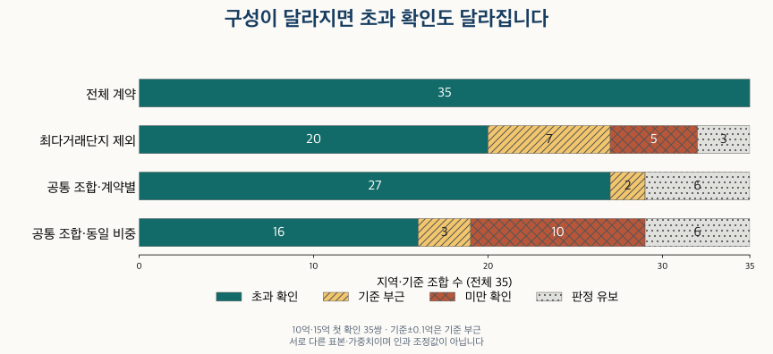

수도권 가격 지도 · 처음 넘은 분기의 조건
84형 아파트 중위가격, 10억·15억을 언제 넘었을까? 서울·경기 분기 비교
2010년~2026년 3분기 서울 25구·수집 경기 36지역의 84형 중위가격을 비교합니다. 10억·15억 첫 초과의 가능~확인 범위, 반락, 면적·정제·거래 구성에 따른 차이를 확인하세요.
분석 기간 · 2010년 1분기~2026년 3분기 · 끝 분기 잠정 | 자료 기준일 · 2026-10-04
“이 동네 84형도 이제 10억을 넘었다”는 말을 들으면 언제부터 그랬는지 궁금해집니다. 2010년 1분기부터 2026년 3분기까지 서울 25구·수집 경기 36지역의 분기 중위가격을 비교했습니다. 10억 원 초과를 확인한 곳은 서울 17구·경기 5지역, 15억 원은 서울 11구·경기 2지역입니다. 다만 거래된 집이 바뀌면 중위가격도 달라집니다. 첫 시점과 함께 표본 조건·반락·구성 비교를 읽어야 합니다.
어떤 84형 가격을, 어느 분기에서 비교했나요?
주 비교는 전용면적을 평으로 환산·반올림한 25·26평형을 묶은 표준 84형입니다. 전용 약 80.99㎡ 이상 87.60㎡ 미만 범위이며, 정확히 84㎡인 집이나 공급면적 84㎡를 뜻하지 않습니다. 면적 기준과 용어를 먼저 확인해 보세요. 좁은 84≤전용면적<85㎡는 별도 민감도로 남겼습니다. 같은 면적 묶음이어도 단지·연식·층·상태가 모두 같은 주택은 아닙니다.
분기 안의 정제된 매매 계약을 금액순으로 놓은 중위값입니다. 계약마다 같은 비중이며 짝수 표본은 가운데 두 금액을 평균합니다. 명목 계약금액이고 물가를 조정하지 않았습니다. 구별 중위값이나 월별 중위값을 다시 평균한 통계도 아닙니다.
주 비교는 관측된 해제와 직거래를 제외합니다. 해제 표시는 2020년 2월, 거래유형 표시는 2021년 11월부터 제공되므로, 그 이전 빈칸을 확인된 정상·중개거래로 해석하지 않습니다. 분기별 40계약·10단지 이상일 때만 판단합니다. 최신 2026년 3분기는 신고 지연·정정으로 바뀔 수 있어 별표(*)를 붙였습니다.
‘첫 가능’과 ‘첫 확인’은 왜 다른가요?
공개 표는 기준의 ±0.1억 원을 ‘기준 부근’으로 남깁니다. 10억 기준이면 9.9억~10.1억, 15억이면 14.9억~15.1억입니다. 양끝도 기준 부근에 포함합니다. 이 폭은 공개 표시의 정밀도이며 신뢰구간·측정오차가 아닙니다.
- 초과 확인: 중위값이 보호범위 상한보다 높습니다. 10억 기준이면 10.1억 초과입니다.
- 미만 확인: 보호범위 하한보다 낮습니다. 10억 기준이면 9.9억 미만입니다.
- 기준 부근: 범위 안입니다. 정확히 기준을 넘었는지는 이 표로 판단하지 않습니다.
- 판정 유보: 계약 수 또는 단지 수 조건이 부족합니다. 0원·미돌파가 아닙니다.
처음 ‘기준 부근 또는 초과 확인’이 나온 분기가 첫 가능, 처음 ‘초과 확인’이 나온 분기가 첫 확인입니다. 초과 확인이 있는 지역에서는 표본 조건을 충족한 분기 안의 첫 실제 초과가 이 범위에 있습니다. 둘이 같을 때만 한 분기로 좁혀집니다. 확인이 없으면 초과가 확정되지 않은 것이며, ‘한 번도 넘지 않았다’는 뜻이 아닙니다. 유보 분기는 이 범위로 복원하지 않습니다.
서울 25구는 언제10억·15억 초과를 확인했나요?
10억 기준에서 강남구 다음 서초구의 첫 가능~확인은 2017년 2분기~4분기, 용산구는 2018년 3분기로 나타납니다. 15억 기준은 강남구 2018년 3분기, 서초구 2019년 2분기가 첫 확인입니다. 순서가 이르다는 것은 같은 집이 더 많이 올랐거나 앞으로 더 오른다는 뜻이 아닙니다.
범위가 길게 남는 곳도 있습니다. 동대문구 10억 기준은 2021년 4분기~2025년 3분기, 광진구 15억 기준은 2021년 3분기~2025년 3분기입니다. 그 사이를 모두 초과 상태로 채우면 안 됩니다. 기준 부근·유보와 다시 낮아지는 분기가 섞일 수 있습니다.
표의 ‘—’는 해당 가능/확인 시점을 찾지 못했다는 뜻입니다. ‘가능 이전 유보 있음’은 앞선 작은 표본을 판단하지 못했다는 뜻입니다. ‘연속 2분기 확인일’은 인접한 두 달력분기가 모두 초과 확인인 경우의 두 번째 분기이며, 중간 유보를 건너뛰지 않습니다.
| 지역 | 첫 가능 | 첫 확인 | 가능 이전 유보 | 연속 2분기 확인일 |
|---|---|---|---|---|
| 종로구 | 2020년 3분기 | 2020년 3분기 | 있음 | 2020년 4분기 |
| 중구 | 2020년 3분기 | 2020년 3분기 | 있음 | 2020년 4분기 |
| 용산구 | 2018년 3분기 | 2018년 3분기 | 있음 | 2019년 4분기 |
| 성동구 | 2019년 4분기 | 2019년 4분기 | 없음 | 2020년 3분기 |
| 광진구 | 2019년 4분기 | 2019년 4분기 | 있음 | 2020년 3분기 |
| 동대문구 | 2021년 4분기 | 2025년 3분기 | 없음 | 2026년 2분기 |
| 중랑구 | — | — | — | — |
| 성북구 | 2026년 2분기 | 2026년 3분기 * | 있음 | — |
| 강북구 | — | — | — | — |
| 도봉구 | — | — | — | — |
| 노원구 | — | — | — | — |
| 은평구 | 2025년 4분기 | — | 있음 | — |
| 서대문구 | 2020년 4분기 | 2020년 4분기 | 없음 | 2021년 1분기 |
| 마포구 | 2020년 2분기 | 2020년 3분기 | 있음 | 2020년 4분기 |
| 양천구 | 2021년 2분기 | 2021년 2분기 | 없음 | 2024년 3분기 |
| 강서구 | 2021년 3분기 | 2025년 3분기 | 없음 | 2025년 4분기 |
| 구로구 | — | — | — | — |
| 금천구 | — | — | — | — |
| 영등포구 | 2020년 4분기 | 2021년 1분기 | 없음 | 2021년 2분기 |
| 동작구 | 2020년 3분기 | 2020년 3분기 | 없음 | 2020년 4분기 |
| 관악구 | 2026년 1분기 | — | 있음 | — |
| 서초구 | 2017년 2분기 | 2017년 4분기 | 없음 | 2018년 1분기 |
| 강남구 | 2016년 4분기 | 2017년 1분기 | 없음 | 2017년 2분기 |
| 송파구 | 2019년 1분기 | 2019년 1분기 | 없음 | 2019년 2분기 |
| 강동구 | 2020년 4분기 | 2020년 4분기 | 없음 | 2021년 1분기 |
| 지역 | 첫 가능 | 첫 확인 | 가능 이전 유보 | 연속 2분기 확인일 |
|---|---|---|---|---|
| 종로구 | 2024년 2분기 | 2024년 2분기 | 있음 | — |
| 중구 | 2026년 2분기 | 2026년 2분기 | 있음 | — |
| 용산구 | 2021년 1분기 | 2021년 2분기 | 있음 | 2021년 3분기 |
| 성동구 | 2022년 2분기 | 2022년 2분기 | 있음 | 2025년 1분기 |
| 광진구 | 2021년 3분기 | 2025년 3분기 | 있음 | 2025년 4분기 |
| 동대문구 | — | — | — | — |
| 중랑구 | — | — | — | — |
| 성북구 | — | — | — | — |
| 강북구 | — | — | — | — |
| 도봉구 | — | — | — | — |
| 노원구 | — | — | — | — |
| 은평구 | — | — | — | — |
| 서대문구 | — | — | — | — |
| 마포구 | 2021년 4분기 | 2021년 4분기 | 있음 | 2025년 2분기 |
| 양천구 | — | — | — | — |
| 강서구 | — | — | — | — |
| 구로구 | — | — | — | — |
| 금천구 | — | — | — | — |
| 영등포구 | — | — | — | — |
| 동작구 | 2026년 2분기 | 2026년 2분기 | 있음 | 2026년 3분기 * |
| 관악구 | — | — | — | — |
| 서초구 | 2019년 2분기 | 2019년 2분기 | 있음 | 2019년 3분기 |
| 강남구 | 2018년 3분기 | 2018년 3분기 | 없음 | 2019년 2분기 |
| 송파구 | 2020년 2분기 | 2021년 1분기 | 없음 | 2021년 2분기 |
| 강동구 | 2026년 2분기 | 2026년 2분기 | 있음 | — |
경기에서는 어떤 지역이 먼저 확인됐나요?
수집 범위의 10억 기준에서는 성남시 분당구가 2020년 2분기~3분기, 수정구가 2020년 4분기, 하남시가 2021년 2분기~3분기입니다. 15억 기준에서 과천시는 2023년 2분기, 분당구는 2025년 3분기~4분기로 나타납니다.
특히 과천의 10억 첫 확인 2023년 1분기를 실제 최초 돌파라고 읽으면 안 됩니다. 그 이전에 판정 유보가 있습니다. 거래되는 단지 수가 적은 지역은 이미 높은 가격의 계약이 있어도10단지 조건을 충족하지 못할 수 있습니다. 이 규칙은 지역의 가격 수준과 다른 표본 조건입니다.
여기서 경기는 수집한 36개 시·구 범위입니다. 경기 전체나 인천을 포함한 수도권 전체가 아닙니다. 단지의 현재 지역 분류를 과거 계약에도 일관되게 적용했으므로, 각 연도의 행정경계를 복원한 통계도 아닙니다.
| 지역 | 첫 가능 | 첫 확인 | 가능 이전 유보 | 연속 2분기 확인일 |
|---|---|---|---|---|
| 수원시 장안구 | — | — | — | — |
| 수원시 권선구 | — | — | — | — |
| 수원시 팔달구 | — | — | — | — |
| 수원시 영통구 | — | — | — | — |
| 성남시 수정구 | 2020년 4분기 | 2020년 4분기 | 있음 | 2023년 3분기 |
| 성남시 중원구 | — | — | — | — |
| 성남시 분당구 | 2020년 2분기 | 2020년 3분기 | 없음 | 2020년 4분기 |
| 의정부시 | — | — | — | — |
| 안양시 만안구 | — | — | — | — |
| 안양시 동안구 | — | — | — | — |
| 부천시 원미구 | — | — | — | — |
| 부천시 소사구 | — | — | — | — |
| 부천시 오정구 | — | — | — | — |
| 광명시 | 2025년 4분기 | — | 있음 | — |
| 평택시 | — | — | — | — |
| 안산시 상록구 | — | — | — | — |
| 안산시 단원구 | — | — | — | — |
| 고양시 덕양구 | — | — | — | — |
| 고양시 일산동구 | — | — | — | — |
| 고양시 일산서구 | — | — | — | — |
| 과천시 | 2023년 1분기 | 2023년 1분기 | 있음 | 2023년 2분기 |
| 구리시 | — | — | — | — |
| 남양주시 | — | — | — | — |
| 군포시 | — | — | — | — |
| 의왕시 | — | — | — | — |
| 하남시 | 2021년 2분기 | 2021년 3분기 | 없음 | 2021년 4분기 |
| 용인시 처인구 | — | — | — | — |
| 용인시 기흥구 | — | — | — | — |
| 용인시 수지구 | 2026년 2분기 | 2026년 2분기 | 없음 | 2026년 3분기 * |
| 파주시 | — | — | — | — |
| 김포시 | — | — | — | — |
| 화성시 만세구 | — | — | — | — |
| 화성시 효행구 | — | — | — | — |
| 화성시 병점구 | — | — | — | — |
| 화성시 동탄구 | — | — | — | — |
| 광주시 | — | — | — | — |
| 지역 | 첫 가능 | 첫 확인 | 가능 이전 유보 | 연속 2분기 확인일 |
|---|---|---|---|---|
| 수원시 장안구 | — | — | — | — |
| 수원시 권선구 | — | — | — | — |
| 수원시 팔달구 | — | — | — | — |
| 수원시 영통구 | — | — | — | — |
| 성남시 수정구 | — | — | — | — |
| 성남시 중원구 | — | — | — | — |
| 성남시 분당구 | 2025년 3분기 | 2025년 4분기 | 있음 | 2026년 1분기 |
| 의정부시 | — | — | — | — |
| 안양시 만안구 | — | — | — | — |
| 안양시 동안구 | — | — | — | — |
| 부천시 원미구 | — | — | — | — |
| 부천시 소사구 | — | — | — | — |
| 부천시 오정구 | — | — | — | — |
| 광명시 | — | — | — | — |
| 평택시 | — | — | — | — |
| 안산시 상록구 | — | — | — | — |
| 안산시 단원구 | — | — | — | — |
| 고양시 덕양구 | — | — | — | — |
| 고양시 일산동구 | — | — | — | — |
| 고양시 일산서구 | — | — | — | — |
| 과천시 | 2023년 2분기 | 2023년 2분기 | 있음 | 2023년 3분기 |
| 구리시 | — | — | — | — |
| 남양주시 | — | — | — | — |
| 군포시 | — | — | — | — |
| 의왕시 | — | — | — | — |
| 하남시 | — | — | — | — |
| 용인시 처인구 | — | — | — | — |
| 용인시 기흥구 | — | — | — | — |
| 용인시 수지구 | — | — | — | — |
| 파주시 | — | — | — | — |
| 김포시 | — | — | — | — |
| 화성시 만세구 | — | — | — | — |
| 화성시 효행구 | — | — | — | — |
| 화성시 병점구 | — | — | — | — |
| 화성시 동탄구 | — | — | — | — |
| 광주시 | — | — | — | — |
기준을 넘은 뒤 다시 내려간 곳도 있나요?
주 비교에서 초과 확인 뒤 미만 확인까지 나온 곳은 10억 기준 6지역, 15억 기준 5지역입니다. 성동구·광진구의 10억 기준은 2019년 4분기 초과 확인 뒤 2020년 1분기에 미만 확인이 나옵니다. 한 분기의 문턱 통과가 계속 유지된다는 보장은 없습니다.
첫 ‘미만 가능’은 초과 확인 이후 처음 기준 부근 또는 미만 확인이 나온 분기입니다. 첫 ‘미만 확인’은 하한보다 낮아진 것을 확인한 분기입니다. 가능만 있고 확인이 없으면 반락이 확정되지 않습니다. 이 표는 초과를 확인한 뒤의 변화이며, 그 이전 기준 부근에서 실제 초과·반락이 있었을 가능성까지 배제하지 않습니다. 다시 초과 확인도 회복한 동일 주택의 수익률을 뜻하지 않습니다.
| 지역 | 초과 확인 | 첫 미만 가능 | 첫 미만 확인 | 미만 확인 뒤 재초과 확인 |
|---|---|---|---|---|
| 종로구 | 2020년 3분기 | — | — | — |
| 중구 | 2020년 3분기 | — | — | — |
| 용산구 | 2018년 3분기 | 2019년 2분기 | — | — |
| 성동구 | 2019년 4분기 | 2020년 1분기 | 2020년 1분기 | 2020년 2분기 |
| 광진구 | 2019년 4분기 | 2020년 1분기 | 2020년 1분기 | 2020년 2분기 |
| 동대문구 | 2025년 3분기 | 2025년 4분기 | — | — |
| 성북구 | 2026년 3분기 * | — | — | — |
| 서대문구 | 2020년 4분기 | 2021년 2분기 | 2021년 2분기 | 2021년 3분기 |
| 마포구 | 2020년 3분기 | — | — | — |
| 양천구 | 2021년 2분기 | 2021년 3분기 | 2021년 3분기 | 2024년 2분기 |
| 강서구 | 2025년 3분기 | 2026년 1분기 | — | — |
| 영등포구 | 2021년 1분기 | 2023년 4분기 | — | — |
| 동작구 | 2020년 3분기 | — | — | — |
| 서초구 | 2017년 4분기 | — | — | — |
| 강남구 | 2017년 1분기 | — | — | — |
| 송파구 | 2019년 1분기 | — | — | — |
| 강동구 | 2020년 4분기 | — | — | — |
| 성남시 수정구 | 2020년 4분기 | 2021년 1분기 | 2021년 1분기 | 2023년 2분기 |
| 성남시 분당구 | 2020년 3분기 | — | — | — |
| 과천시 | 2023년 1분기 | — | — | — |
| 하남시 | 2021년 3분기 | 2022년 3분기 | 2022년 3분기 | 2025년 4분기 |
| 용인시 수지구 | 2026년 2분기 | — | — | — |
| 지역 | 초과 확인 | 첫 미만 가능 | 첫 미만 확인 | 미만 확인 뒤 재초과 확인 |
|---|---|---|---|---|
| 종로구 | 2024년 2분기 | 2025년 1분기 | 2025년 1분기 | — |
| 중구 | 2026년 2분기 | — | — | — |
| 용산구 | 2021년 2분기 | — | — | — |
| 성동구 | 2022년 2분기 | 2023년 1분기 | 2023년 1분기 | 2024년 4분기 |
| 광진구 | 2025년 3분기 | — | — | — |
| 마포구 | 2021년 4분기 | 2022년 2분기 | 2022년 2분기 | 2025년 1분기 |
| 동작구 | 2026년 2분기 | — | — | — |
| 서초구 | 2019년 2분기 | 2019년 4분기 | 2019년 4분기 | 2020년 2분기 |
| 강남구 | 2018년 3분기 | 2018년 4분기 | 2018년 4분기 | 2019년 1분기 |
| 송파구 | 2021년 1분기 | — | — | — |
| 강동구 | 2026년 2분기 | 2026년 3분기 * | — | — |
| 성남시 분당구 | 2025년 4분기 | — | — | — |
| 과천시 | 2023년 2분기 | 2024년 1분기 | — | — |
집값이 오른 걸까요, 비싼 집이 더 거래된 걸까요?
첫 초과 확인이 있는 35개 지역·기준 조합에서 같은 분기를 네 방식으로 비교했습니다. 같은 지역이 10억과 15억에 각각 등장하므로 35개 서로 다른 지역을 뜻하지 않습니다. 직전 분기는 바로 앞 달력분기이며, 표본이 부족하다고 더 먼 분기로 바꾸지 않았습니다.
- 전체 계약: 주 비교와 같습니다.
- 최다거래단지 제외: 그 분기에서 계약이 가장 많은 단지 하나를 뺍니다. 어떤 단지가 전체값을 크게 좌우하는지 보는 민감도입니다.
- 공통 조합·계약별: 두 분기에 모두 관측되는 단지×정확한 전용면적 조합만 남깁니다. 남은 계약은 한 건마다 같은 비중입니다.
- 공통 조합·동일 비중: 각 공통 조합의 분기 중위값을 구한 뒤, 그 조합들에 같은 비중을 준 중위값입니다. 거래가 많은 조합의 영향이 달라집니다.

| 구성 | 초과 확인 | 기준 부근 | 미만 확인 | 판정 유보 |
|---|---|---|---|---|
| 전체 계약 | 35 | 0 | 0 | 0 |
| 최다거래단지 제외 | 20 | 7 | 5 | 3 |
| 공통 조합·계약별 | 27 | 2 | 0 | 6 |
| 공통 조합·동일 비중 | 16 | 3 | 10 | 6 |
전체에서 확인된 35개 중 공통 조합·계약별은 27개에서 초과 확인을 유지하지만, 공통 조합·동일 비중은 16개입니다. 최다거래단지를 뺀 경우에는 5개가 미만 확인으로 바뀝니다. 지역 중위가격 하나만으로 같은 집의 가격 상승을 분리할 수 없다는 반론이 실제 결과에서도 남습니다.
공통 조합을 맞춰도 같은 호실을 확인한 것은 아닙니다. 층·향·수리 상태가 다르고, 공통으로 거래되는 조합 자체가 선택된 표본입니다. 단지를 빼거나 가중치를 바꾼 값을 ‘참가격’으로 고쳐 쓰지 않고, 원래 비교가 구성에 얼마나 민감한지 판단하는 데 사용합니다.
35개 지역·기준의 직전 분기와 구성 비교 펼치기
| 지역 | 기준 | 직전 → 확인 | 전체 계약 | 최다거래단지 제외 | 공통 조합·계약별 | 공통 조합·동일 비중 |
|---|---|---|---|---|---|---|
| 종로구 | 10억 | 2020년 2분기 → 2020년 3분기 | 미만 확인 → 초과 확인 | 판정 유보 → 미만 확인 | 판정 유보 → 초과 확인 | 판정 유보 → 미만 확인 |
| 종로구 | 15억 | 2024년 1분기 → 2024년 2분기 | 판정 유보 → 초과 확인 | 판정 유보 → 판정 유보 | 판정 유보 → 판정 유보 | 판정 유보 → 판정 유보 |
| 중구 | 10억 | 2020년 2분기 → 2020년 3분기 | 미만 확인 → 초과 확인 | 미만 확인 → 초과 확인 | 기준 부근 → 기준 부근 | 미만 확인 → 미만 확인 |
| 중구 | 15억 | 2026년 1분기 → 2026년 2분기 | 미만 확인 → 초과 확인 | 초과 확인 → 미만 확인 | 미만 확인 → 초과 확인 | 미만 확인 → 초과 확인 |
| 용산구 | 10억 | 2018년 2분기 → 2018년 3분기 | 미만 확인 → 초과 확인 | 미만 확인 → 초과 확인 | 미만 확인 → 초과 확인 | 미만 확인 → 기준 부근 |
| 용산구 | 15억 | 2021년 1분기 → 2021년 2분기 | 기준 부근 → 초과 확인 | 미만 확인 → 초과 확인 | 판정 유보 → 판정 유보 | 판정 유보 → 판정 유보 |
| 성동구 | 10억 | 2019년 3분기 → 2019년 4분기 | 미만 확인 → 초과 확인 | 미만 확인 → 기준 부근 | 미만 확인 → 초과 확인 | 기준 부근 → 초과 확인 |
| 성동구 | 15억 | 2022년 1분기 → 2022년 2분기 | 판정 유보 → 초과 확인 | 판정 유보 → 초과 확인 | 판정 유보 → 판정 유보 | 판정 유보 → 판정 유보 |
| 광진구 | 10억 | 2019년 3분기 → 2019년 4분기 | 미만 확인 → 초과 확인 | 미만 확인 → 초과 확인 | 기준 부근 → 초과 확인 | 미만 확인 → 초과 확인 |
| 광진구 | 15억 | 2025년 2분기 → 2025년 3분기 | 미만 확인 → 초과 확인 | 미만 확인 → 초과 확인 | 초과 확인 → 초과 확인 | 초과 확인 → 초과 확인 |
| 동대문구 | 10억 | 2025년 2분기 → 2025년 3분기 | 미만 확인 → 초과 확인 | 미만 확인 → 기준 부근 | 미만 확인 → 초과 확인 | 미만 확인 → 미만 확인 |
| 성북구 | 10억 | 2026년 2분기 → 2026년 3분기 * | 기준 부근 → 초과 확인 | 기준 부근 → 초과 확인 | 기준 부근 → 초과 확인 | 초과 확인 → 초과 확인 |
| 서대문구 | 10억 | 2020년 3분기 → 2020년 4분기 | 미만 확인 → 초과 확인 | 미만 확인 → 기준 부근 | 미만 확인 → 초과 확인 | 미만 확인 → 미만 확인 |
| 마포구 | 10억 | 2020년 2분기 → 2020년 3분기 | 기준 부근 → 초과 확인 | 기준 부근 → 초과 확인 | 기준 부근 → 초과 확인 | 기준 부근 → 초과 확인 |
| 마포구 | 15억 | 2021년 3분기 → 2021년 4분기 | 미만 확인 → 초과 확인 | 미만 확인 → 초과 확인 | 판정 유보 → 판정 유보 | 판정 유보 → 판정 유보 |
| 양천구 | 10억 | 2021년 1분기 → 2021년 2분기 | 미만 확인 → 초과 확인 | 미만 확인 → 초과 확인 | 초과 확인 → 초과 확인 | 초과 확인 → 초과 확인 |
| 강서구 | 10억 | 2025년 2분기 → 2025년 3분기 | 기준 부근 → 초과 확인 | 미만 확인 → 미만 확인 | 초과 확인 → 초과 확인 | 미만 확인 → 미만 확인 |
| 영등포구 | 10억 | 2020년 4분기 → 2021년 1분기 | 기준 부근 → 초과 확인 | 미만 확인 → 초과 확인 | 기준 부근 → 초과 확인 | 미만 확인 → 초과 확인 |
| 동작구 | 10억 | 2020년 2분기 → 2020년 3분기 | 미만 확인 → 초과 확인 | 미만 확인 → 기준 부근 | 미만 확인 → 초과 확인 | 미만 확인 → 초과 확인 |
| 동작구 | 15억 | 2026년 1분기 → 2026년 2분기 | 미만 확인 → 초과 확인 | 미만 확인 → 초과 확인 | 미만 확인 → 초과 확인 | 미만 확인 → 미만 확인 |
| 서초구 | 10억 | 2017년 3분기 → 2017년 4분기 | 미만 확인 → 초과 확인 | 기준 부근 → 초과 확인 | 기준 부근 → 초과 확인 | 미만 확인 → 미만 확인 |
| 서초구 | 15억 | 2019년 1분기 → 2019년 2분기 | 판정 유보 → 초과 확인 | 판정 유보 → 초과 확인 | 판정 유보 → 초과 확인 | 판정 유보 → 초과 확인 |
| 강남구 | 10억 | 2016년 4분기 → 2017년 1분기 | 기준 부근 → 초과 확인 | 미만 확인 → 초과 확인 | 초과 확인 → 초과 확인 | 미만 확인 → 기준 부근 |
| 강남구 | 15억 | 2018년 2분기 → 2018년 3분기 | 미만 확인 → 초과 확인 | 미만 확인 → 미만 확인 | 초과 확인 → 초과 확인 | 미만 확인 → 초과 확인 |
| 송파구 | 10억 | 2018년 4분기 → 2019년 1분기 | 미만 확인 → 초과 확인 | 미만 확인 → 초과 확인 | 초과 확인 → 초과 확인 | 초과 확인 → 초과 확인 |
| 송파구 | 15억 | 2020년 4분기 → 2021년 1분기 | 미만 확인 → 초과 확인 | 미만 확인 → 초과 확인 | 초과 확인 → 초과 확인 | 미만 확인 → 미만 확인 |
| 강동구 | 10억 | 2020년 3분기 → 2020년 4분기 | 미만 확인 → 초과 확인 | 미만 확인 → 기준 부근 | 초과 확인 → 초과 확인 | 미만 확인 → 초과 확인 |
| 강동구 | 15억 | 2026년 1분기 → 2026년 2분기 | 미만 확인 → 초과 확인 | 미만 확인 → 기준 부근 | 기준 부근 → 초과 확인 | 미만 확인 → 기준 부근 |
| 성남시 수정구 | 10억 | 2020년 3분기 → 2020년 4분기 | 미만 확인 → 초과 확인 | 미만 확인 → 미만 확인 | 미만 확인 → 초과 확인 | 미만 확인 → 미만 확인 |
| 성남시 분당구 | 10억 | 2020년 2분기 → 2020년 3분기 | 기준 부근 → 초과 확인 | 기준 부근 → 초과 확인 | 기준 부근 → 초과 확인 | 초과 확인 → 초과 확인 |
| 성남시 분당구 | 15억 | 2025년 3분기 → 2025년 4분기 | 기준 부근 → 초과 확인 | 기준 부근 → 초과 확인 | 기준 부근 → 초과 확인 | 초과 확인 → 초과 확인 |
| 과천시 | 10억 | 2022년 4분기 → 2023년 1분기 | 판정 유보 → 초과 확인 | 판정 유보 → 판정 유보 | 판정 유보 → 판정 유보 | 판정 유보 → 판정 유보 |
| 과천시 | 15억 | 2023년 1분기 → 2023년 2분기 | 미만 확인 → 초과 확인 | 판정 유보 → 판정 유보 | 판정 유보 → 판정 유보 | 판정 유보 → 판정 유보 |
| 하남시 | 10억 | 2021년 2분기 → 2021년 3분기 | 기준 부근 → 초과 확인 | 초과 확인 → 기준 부근 | 초과 확인 → 초과 확인 | 기준 부근 → 초과 확인 |
| 용인시 수지구 | 10억 | 2026년 1분기 → 2026년 2분기 | 미만 확인 → 초과 확인 | 미만 확인 → 초과 확인 | 미만 확인 → 기준 부근 | 미만 확인 → 미만 확인 |
면적이나 해제·직거래 처리를 바꾸면 언제가 달라지나요?
좁은 84㎡대·기본 집계·해제만 제외도 같은±0.1억 표시와 40계약·10단지 조건을 적용했습니다. 기본 집계는 원천의 공통 적격 조건을 통과한 계약을 포함하며 관측 해제·직거래도 남깁니다. ‘해제만 제외’에는 직거래가 남습니다. 아래 표는 원래 주 비교를 유지한 채 조건을 바꾼 첫 가능~확인을 나란히 보여 줍니다.
‘가능 분기 없음’은 표본 조건을 충족한 분기에서 기준 부근이나 초과 확인이 없다는 뜻입니다. 유보 분기를 미만으로 간주한 결과가 아닙니다. 한 조건에서만 확인되거나 범위가 길어지는 지역은 하나의 연도·분기로 단정하기 어렵습니다. 연속 확인일 역시 처음 한 번의 확인과 다른 질문입니다.
10억 · 모든 지역의 면적/정제 민감도 펼치기
| 지역 | 표준 84형·제외 | 좁은 84㎡대·제외 | 표준 84형·기본 | 표준 84형·해제만 제외 |
|---|---|---|---|---|
| 종로구 | 2020년 3분기 | 2020년 2분기 ~ 2020년 3분기 | 2020년 3분기 | 2020년 3분기 |
| 중구 | 2020년 3분기 | 2020년 2분기 ~ 2020년 3분기 | 2020년 3분기 | 2020년 3분기 |
| 용산구 | 2018년 3분기 | 2018년 3분기 | 2018년 3분기 | 2018년 3분기 |
| 성동구 | 2019년 4분기 | 2019년 2분기 ~ 2019년 4분기 | 2019년 4분기 | 2019년 4분기 |
| 광진구 | 2019년 4분기 | 2019년 3분기 ~ 2019년 4분기 | 2019년 4분기 | 2019년 4분기 |
| 동대문구 | 2021년 4분기 ~ 2025년 3분기 | 2021년 4분기 ~ 2025년 3분기 | 2021년 4분기 ~ 2025년 3분기 | 2021년 4분기 ~ 2025년 3분기 |
| 중랑구 | 가능 분기 없음 | 가능 분기 없음 | 가능 분기 없음 | 가능 분기 없음 |
| 성북구 | 2026년 2분기 ~ 2026년 3분기 * | 2026년 2분기 ~ 2026년 3분기 * | 2026년 2분기 ~ 2026년 3분기 * | 2026년 2분기 이후 · 미확정 |
| 강북구 | 가능 분기 없음 | 가능 분기 없음 | 가능 분기 없음 | 가능 분기 없음 |
| 도봉구 | 가능 분기 없음 | 가능 분기 없음 | 가능 분기 없음 | 가능 분기 없음 |
| 노원구 | 가능 분기 없음 | 가능 분기 없음 | 가능 분기 없음 | 가능 분기 없음 |
| 은평구 | 2025년 4분기 이후 · 미확정 | 2025년 4분기 이후 · 미확정 | 2025년 4분기 이후 · 미확정 | 2025년 4분기 이후 · 미확정 |
| 서대문구 | 2020년 4분기 | 2020년 4분기 | 2020년 4분기 | 2020년 4분기 |
| 마포구 | 2020년 2분기 ~ 2020년 3분기 | 2020년 2분기 ~ 2020년 3분기 | 2020년 2분기 ~ 2020년 3분기 | 2020년 2분기 ~ 2020년 3분기 |
| 양천구 | 2021년 2분기 | 2021년 2분기 | 2021년 2분기 | 2021년 2분기 |
| 강서구 | 2021년 3분기 ~ 2025년 3분기 | 2021년 3분기 | 2021년 3분기 ~ 2025년 4분기 | 2021년 3분기 ~ 2025년 3분기 |
| 구로구 | 가능 분기 없음 | 가능 분기 없음 | 가능 분기 없음 | 가능 분기 없음 |
| 금천구 | 가능 분기 없음 | 가능 분기 없음 | 가능 분기 없음 | 가능 분기 없음 |
| 영등포구 | 2020년 4분기 ~ 2021년 1분기 | 2020년 4분기 ~ 2021년 1분기 | 2020년 4분기 ~ 2021년 1분기 | 2020년 4분기 ~ 2021년 1분기 |
| 동작구 | 2020년 3분기 | 2020년 3분기 | 2020년 3분기 | 2020년 3분기 |
| 관악구 | 2026년 1분기 이후 · 미확정 | 2021년 3분기 | 2026년 1분기 이후 · 미확정 | 2026년 1분기 이후 · 미확정 |
| 서초구 | 2017년 2분기 ~ 2017년 4분기 | 2017년 2분기 | 2017년 2분기 ~ 2017년 4분기 | 2017년 2분기 ~ 2017년 4분기 |
| 강남구 | 2016년 4분기 ~ 2017년 1분기 | 2016년 4분기 | 2016년 4분기 ~ 2017년 1분기 | 2016년 4분기 ~ 2017년 1분기 |
| 송파구 | 2019년 1분기 | 2019년 1분기 | 2019년 1분기 | 2019년 1분기 |
| 강동구 | 2020년 4분기 | 2020년 4분기 | 2020년 4분기 | 2020년 4분기 |
| 수원시 장안구 | 가능 분기 없음 | 가능 분기 없음 | 가능 분기 없음 | 가능 분기 없음 |
| 수원시 권선구 | 가능 분기 없음 | 가능 분기 없음 | 가능 분기 없음 | 가능 분기 없음 |
| 수원시 팔달구 | 가능 분기 없음 | 가능 분기 없음 | 가능 분기 없음 | 가능 분기 없음 |
| 수원시 영통구 | 가능 분기 없음 | 가능 분기 없음 | 가능 분기 없음 | 가능 분기 없음 |
| 성남시 수정구 | 2020년 4분기 | 2023년 1분기 ~ 2023년 3분기 | 2020년 4분기 | 2020년 4분기 |
| 성남시 중원구 | 가능 분기 없음 | 가능 분기 없음 | 가능 분기 없음 | 가능 분기 없음 |
| 성남시 분당구 | 2020년 2분기 ~ 2020년 3분기 | 2020년 2분기 ~ 2020년 3분기 | 2020년 2분기 ~ 2020년 3분기 | 2020년 2분기 ~ 2020년 3분기 |
| 의정부시 | 가능 분기 없음 | 가능 분기 없음 | 가능 분기 없음 | 가능 분기 없음 |
| 안양시 만안구 | 가능 분기 없음 | 가능 분기 없음 | 가능 분기 없음 | 가능 분기 없음 |
| 안양시 동안구 | 가능 분기 없음 | 가능 분기 없음 | 가능 분기 없음 | 가능 분기 없음 |
| 부천시 원미구 | 가능 분기 없음 | 가능 분기 없음 | 가능 분기 없음 | 가능 분기 없음 |
| 부천시 소사구 | 가능 분기 없음 | 가능 분기 없음 | 가능 분기 없음 | 가능 분기 없음 |
| 부천시 오정구 | 가능 분기 없음 | 가능 분기 없음 | 가능 분기 없음 | 가능 분기 없음 |
| 광명시 | 2025년 4분기 이후 · 미확정 | 2021년 4분기 이후 · 미확정 | 2022년 2분기 이후 · 미확정 | 가능 분기 없음 |
| 평택시 | 가능 분기 없음 | 가능 분기 없음 | 가능 분기 없음 | 가능 분기 없음 |
| 안산시 상록구 | 가능 분기 없음 | 가능 분기 없음 | 가능 분기 없음 | 가능 분기 없음 |
| 안산시 단원구 | 가능 분기 없음 | 가능 분기 없음 | 가능 분기 없음 | 가능 분기 없음 |
| 고양시 덕양구 | 가능 분기 없음 | 가능 분기 없음 | 가능 분기 없음 | 가능 분기 없음 |
| 고양시 일산동구 | 가능 분기 없음 | 가능 분기 없음 | 가능 분기 없음 | 가능 분기 없음 |
| 고양시 일산서구 | 가능 분기 없음 | 가능 분기 없음 | 가능 분기 없음 | 가능 분기 없음 |
| 과천시 | 2023년 1분기 | 2023년 2분기 | 2023년 1분기 | 2023년 1분기 |
| 구리시 | 가능 분기 없음 | 가능 분기 없음 | 가능 분기 없음 | 가능 분기 없음 |
| 남양주시 | 가능 분기 없음 | 가능 분기 없음 | 가능 분기 없음 | 가능 분기 없음 |
| 군포시 | 가능 분기 없음 | 가능 분기 없음 | 가능 분기 없음 | 가능 분기 없음 |
| 의왕시 | 가능 분기 없음 | 가능 분기 없음 | 가능 분기 없음 | 가능 분기 없음 |
| 하남시 | 2021년 2분기 ~ 2021년 3분기 | 2021년 2분기 ~ 2021년 3분기 | 2021년 2분기 ~ 2021년 3분기 | 2021년 2분기 ~ 2021년 3분기 |
| 용인시 처인구 | 가능 분기 없음 | 가능 분기 없음 | 가능 분기 없음 | 가능 분기 없음 |
| 용인시 기흥구 | 가능 분기 없음 | 가능 분기 없음 | 가능 분기 없음 | 가능 분기 없음 |
| 용인시 수지구 | 2026년 2분기 | 2026년 2분기 | 2026년 2분기 ~ 2026년 3분기 * | 2026년 2분기 ~ 2026년 3분기 * |
| 파주시 | 가능 분기 없음 | 가능 분기 없음 | 가능 분기 없음 | 가능 분기 없음 |
| 김포시 | 가능 분기 없음 | 가능 분기 없음 | 가능 분기 없음 | 가능 분기 없음 |
| 화성시 만세구 | 가능 분기 없음 | 가능 분기 없음 | 가능 분기 없음 | 가능 분기 없음 |
| 화성시 효행구 | 가능 분기 없음 | 가능 분기 없음 | 가능 분기 없음 | 가능 분기 없음 |
| 화성시 병점구 | 가능 분기 없음 | 가능 분기 없음 | 가능 분기 없음 | 가능 분기 없음 |
| 화성시 동탄구 | 가능 분기 없음 | 가능 분기 없음 | 가능 분기 없음 | 가능 분기 없음 |
| 광주시 | 가능 분기 없음 | 가능 분기 없음 | 가능 분기 없음 | 가능 분기 없음 |
15억 · 모든 지역의 면적/정제 민감도 펼치기
| 지역 | 표준 84형·제외 | 좁은 84㎡대·제외 | 표준 84형·기본 | 표준 84형·해제만 제외 |
|---|---|---|---|---|
| 종로구 | 2024년 2분기 | 2024년 2분기 | 2024년 2분기 | 2024년 2분기 |
| 중구 | 2026년 2분기 | 2026년 2분기 | 2026년 2분기 | 2026년 2분기 |
| 용산구 | 2021년 1분기 ~ 2021년 2분기 | 2021년 1분기 ~ 2021년 2분기 | 2021년 1분기 ~ 2021년 2분기 | 2021년 1분기 ~ 2021년 2분기 |
| 성동구 | 2022년 2분기 | 2022년 2분기 | 2022년 2분기 | 2022년 2분기 |
| 광진구 | 2021년 3분기 ~ 2025년 3분기 | 2021년 3분기 ~ 2025년 3분기 | 2025년 1분기 ~ 2025년 3분기 | 2021년 3분기 ~ 2025년 3분기 |
| 동대문구 | 가능 분기 없음 | 가능 분기 없음 | 가능 분기 없음 | 가능 분기 없음 |
| 중랑구 | 가능 분기 없음 | 가능 분기 없음 | 가능 분기 없음 | 가능 분기 없음 |
| 성북구 | 가능 분기 없음 | 가능 분기 없음 | 가능 분기 없음 | 가능 분기 없음 |
| 강북구 | 가능 분기 없음 | 가능 분기 없음 | 가능 분기 없음 | 가능 분기 없음 |
| 도봉구 | 가능 분기 없음 | 가능 분기 없음 | 가능 분기 없음 | 가능 분기 없음 |
| 노원구 | 가능 분기 없음 | 가능 분기 없음 | 가능 분기 없음 | 가능 분기 없음 |
| 은평구 | 가능 분기 없음 | 가능 분기 없음 | 가능 분기 없음 | 가능 분기 없음 |
| 서대문구 | 가능 분기 없음 | 가능 분기 없음 | 가능 분기 없음 | 가능 분기 없음 |
| 마포구 | 2021년 4분기 | 2021년 4분기 | 2021년 4분기 | 2021년 4분기 |
| 양천구 | 가능 분기 없음 | 가능 분기 없음 | 가능 분기 없음 | 가능 분기 없음 |
| 강서구 | 가능 분기 없음 | 가능 분기 없음 | 가능 분기 없음 | 가능 분기 없음 |
| 구로구 | 가능 분기 없음 | 가능 분기 없음 | 가능 분기 없음 | 가능 분기 없음 |
| 금천구 | 가능 분기 없음 | 가능 분기 없음 | 가능 분기 없음 | 가능 분기 없음 |
| 영등포구 | 가능 분기 없음 | 가능 분기 없음 | 가능 분기 없음 | 가능 분기 없음 |
| 동작구 | 2026년 2분기 | 2026년 2분기 | 2026년 2분기 | 2026년 2분기 |
| 관악구 | 가능 분기 없음 | 가능 분기 없음 | 가능 분기 없음 | 가능 분기 없음 |
| 서초구 | 2019년 2분기 | 2018년 3분기 ~ 2019년 2분기 | 2019년 2분기 | 2019년 2분기 |
| 강남구 | 2018년 3분기 | 2019년 1분기 | 2018년 3분기 | 2018년 3분기 |
| 송파구 | 2020년 2분기 ~ 2021년 1분기 | 2020년 2분기 ~ 2021년 1분기 | 2020년 2분기 ~ 2021년 1분기 | 2020년 2분기 ~ 2021년 1분기 |
| 강동구 | 2026년 2분기 | 2026년 2분기 | 2026년 2분기 | 2026년 2분기 |
| 수원시 장안구 | 가능 분기 없음 | 가능 분기 없음 | 가능 분기 없음 | 가능 분기 없음 |
| 수원시 권선구 | 가능 분기 없음 | 가능 분기 없음 | 가능 분기 없음 | 가능 분기 없음 |
| 수원시 팔달구 | 가능 분기 없음 | 가능 분기 없음 | 가능 분기 없음 | 가능 분기 없음 |
| 수원시 영통구 | 가능 분기 없음 | 가능 분기 없음 | 가능 분기 없음 | 가능 분기 없음 |
| 성남시 수정구 | 가능 분기 없음 | 가능 분기 없음 | 가능 분기 없음 | 가능 분기 없음 |
| 성남시 중원구 | 가능 분기 없음 | 가능 분기 없음 | 가능 분기 없음 | 가능 분기 없음 |
| 성남시 분당구 | 2025년 3분기 ~ 2025년 4분기 | 2025년 3분기 | 2025년 3분기 ~ 2025년 4분기 | 2025년 3분기 ~ 2025년 4분기 |
| 의정부시 | 가능 분기 없음 | 가능 분기 없음 | 가능 분기 없음 | 가능 분기 없음 |
| 안양시 만안구 | 가능 분기 없음 | 가능 분기 없음 | 가능 분기 없음 | 가능 분기 없음 |
| 안양시 동안구 | 가능 분기 없음 | 가능 분기 없음 | 가능 분기 없음 | 가능 분기 없음 |
| 부천시 원미구 | 가능 분기 없음 | 가능 분기 없음 | 가능 분기 없음 | 가능 분기 없음 |
| 부천시 소사구 | 가능 분기 없음 | 가능 분기 없음 | 가능 분기 없음 | 가능 분기 없음 |
| 부천시 오정구 | 가능 분기 없음 | 가능 분기 없음 | 가능 분기 없음 | 가능 분기 없음 |
| 광명시 | 가능 분기 없음 | 가능 분기 없음 | 가능 분기 없음 | 가능 분기 없음 |
| 평택시 | 가능 분기 없음 | 가능 분기 없음 | 가능 분기 없음 | 가능 분기 없음 |
| 안산시 상록구 | 가능 분기 없음 | 가능 분기 없음 | 가능 분기 없음 | 가능 분기 없음 |
| 안산시 단원구 | 가능 분기 없음 | 가능 분기 없음 | 가능 분기 없음 | 가능 분기 없음 |
| 고양시 덕양구 | 가능 분기 없음 | 가능 분기 없음 | 가능 분기 없음 | 가능 분기 없음 |
| 고양시 일산동구 | 가능 분기 없음 | 가능 분기 없음 | 가능 분기 없음 | 가능 분기 없음 |
| 고양시 일산서구 | 가능 분기 없음 | 가능 분기 없음 | 가능 분기 없음 | 가능 분기 없음 |
| 과천시 | 2023년 2분기 | 2023년 3분기 | 2023년 2분기 ~ 2024년 2분기 | 2023년 2분기 ~ 2023년 3분기 |
| 구리시 | 가능 분기 없음 | 가능 분기 없음 | 가능 분기 없음 | 가능 분기 없음 |
| 남양주시 | 가능 분기 없음 | 가능 분기 없음 | 가능 분기 없음 | 가능 분기 없음 |
| 군포시 | 가능 분기 없음 | 가능 분기 없음 | 가능 분기 없음 | 가능 분기 없음 |
| 의왕시 | 가능 분기 없음 | 가능 분기 없음 | 가능 분기 없음 | 가능 분기 없음 |
| 하남시 | 가능 분기 없음 | 가능 분기 없음 | 가능 분기 없음 | 가능 분기 없음 |
| 용인시 처인구 | 가능 분기 없음 | 가능 분기 없음 | 가능 분기 없음 | 가능 분기 없음 |
| 용인시 기흥구 | 가능 분기 없음 | 가능 분기 없음 | 가능 분기 없음 | 가능 분기 없음 |
| 용인시 수지구 | 가능 분기 없음 | 가능 분기 없음 | 가능 분기 없음 | 가능 분기 없음 |
| 파주시 | 가능 분기 없음 | 가능 분기 없음 | 가능 분기 없음 | 가능 분기 없음 |
| 김포시 | 가능 분기 없음 | 가능 분기 없음 | 가능 분기 없음 | 가능 분기 없음 |
| 화성시 만세구 | 가능 분기 없음 | 가능 분기 없음 | 가능 분기 없음 | 가능 분기 없음 |
| 화성시 효행구 | 가능 분기 없음 | 가능 분기 없음 | 가능 분기 없음 | 가능 분기 없음 |
| 화성시 병점구 | 가능 분기 없음 | 가능 분기 없음 | 가능 분기 없음 | 가능 분기 없음 |
| 화성시 동탄구 | 가능 분기 없음 | 가능 분기 없음 | 가능 분기 없음 | 가능 분기 없음 |
| 광주시 | 가능 분기 없음 | 가능 분기 없음 | 가능 분기 없음 | 가능 분기 없음 |
관심 지역에 이 표를 어떻게 써야 할까요?
- 면적과 지역 범위를 맞춥니다. 표준 84형과 좁은 84㎡대, 수집 지역과 실제 생활권을 구분합니다.
- 첫 가능~확인과 유보를 함께 봅니다. 범위가 넓거나 앞선 유보가 있다면 정확한 첫 돌파 연도로 옮겨 쓰지 않습니다.
- 한 번의 확인과 유지 여부를 구분합니다. 연속 2분기·미만 확인·최신 잠정 분기를 함께 확인합니다.
- 구성 반론을 확인합니다. 단지 제외·공통 표본에서 달라지는 결과를 보고, 관심 단지의 같은 전용면적 거래를 별도로 비교합니다.
최근 가격 수준을 먼저 확인하려면 서울 25구의 최근 네 분기 가격 비교를, 기준 가격과 과거 고점 회복의 차이가 궁금하면 고점 재도달과 반등의 분모를 이어 읽어 보세요. 개별 매수 시점을 이 지역 중위가격의 첫 초과만으로 결정할 수는 없습니다.
자료·계산 방법과 전체 분기 상태 펼치기
원천은 국토교통부 아파트 매매 실거래가 상세 자료이며 공식 설명은 2026년 10월 17일 확인했습니다. 2026년 10월 4일 자료 기준의 2010년 1월~2026년 9월 계약을 정제해 자체 집계했습니다. 국토부 공식 지역 가격지수나 현재 매물 가격이 아닙니다. 최근 2026년 3분기는 잠정입니다.
유효 금액·면적과 병합 규칙을 적용하고 토지임대부를 제외했습니다. 단지는 통합 단지 기준이며 현재 단지 목록의 지역 분류를 사용합니다. 현재 재고세대수를 계약 분모나 가중치로 사용하지 않았습니다. 주 비교는 관측 해제·직거래 제외, 보조는 좁은 면적·기본·해제만 제외입니다. 과거 빈 필드를 정상으로 보정하지 않았습니다.
분기 중위값의 정확 초과 계산과 공개 상태의 시점 함수를 따로 대조했습니다. 공개 표·그림·구성 대상 선택은 공개된 상태에서만 계산합니다. 첫 확인 분기와 직전 분기의 구성은 각각 40계약·10단지 조건을 적용합니다. 최다거래단지 동률은 미리 정한 단지 순서로 하나를 선택하며 단지 식별자는 내보내지 않습니다.
정확 가격·계약 건수·단지 식별자 대신 기준 부근과 상태를 제공합니다. 같은 모집단의 기존 공개 가격·단지 제외 차이·명시된 표본 조건과 결합해 대조했습니다. 이 확인을 모든 외부 정보와 결합해도 개별 정보가 드러나지 않는다는 일반 보증으로 해석하지 않습니다.
아래 연도별 칸은 1·2·3·4분기 순서입니다. 초=초과 확인, 근=기준 부근, 미=미만 확인, 유=판정 유보입니다. 2026년은 3분기까지만 있으며 마지막 상태는 잠정입니다. 좁은 면적·다른 정제 조건을 포함한 모든 시간표는 공개 집계 파일(JSON)에 있습니다.
서울 · 10억 전체 분기 상태 펼치기
| 지역 | 2010 | 2011 | 2012 | 2013 | 2014 | 2015 | 2016 | 2017 | 2018 | 2019 | 2020 | 2021 | 2022 | 2023 | 2024 | 2025 | 2026 |
|---|---|---|---|---|---|---|---|---|---|---|---|---|---|---|---|---|---|
| 종로구 | 유·유·유·유 | 미·유·유·유 | 유·유·유·유 | 유·미·유·유 | 미·유·미·미 | 미·미·미·미 | 유·미·미·미 | 미·미·미·미 | 미·유·미·유 | 유·유·미·미 | 유·미·초·초 | 유·유·유·유 | 유·유·유·유 | 유·유·유·유 | 유·초·유·유 | 초·초·유·초 | 초·초·유 |
| 중구 | 유·유·유·미 | 미·유·유·유 | 미·미·유·미 | 미·미·미·미 | 미·미·미·미 | 미·미·미·미 | 미·미·미·미 | 미·미·미·미 | 미·미·미·유 | 유·미·미·미 | 미·미·초·초 | 초·초·유·유 | 유·유·유·유 | 유·유·초·유 | 초·초·초·초 | 초·초·초·초 | 초·초·유 |
| 용산구 | 미·유·유·미 | 미·유·유·미 | 유·유·유·미 | 미·미·미·미 | 미·미·미·미 | 미·미·미·미 | 미·미·미·미 | 미·미·미·미 | 미·미·초·유 | 유·근·초·초 | 초·초·초·초 | 초·초·초·유 | 유·유·유·유 | 유·유·유·초 | 초·초·초·유 | 초·초·초·초 | 초·초·유 |
| 성동구 | 미·미·미·미 | 미·미·미·미 | 미·미·미·미 | 미·미·미·미 | 미·미·미·미 | 미·미·미·미 | 미·미·미·미 | 미·미·미·미 | 미·미·미·미 | 미·미·미·초 | 미·초·초·초 | 초·초·초·초 | 유·초·유·유 | 초·초·초·초 | 초·초·초·초 | 초·초·초·초 | 초·초·초 |
| 광진구 | 미·미·미·미 | 미·미·미·미 | 미·미·미·미 | 미·미·미·미 | 미·미·미·미 | 미·미·미·미 | 미·미·미·미 | 미·미·미·미 | 미·미·미·유 | 미·미·미·초 | 미·초·초·초 | 초·초·초·유 | 유·유·유·유 | 초·초·초·유 | 초·초·초·초 | 초·초·초·초 | 초·초·초 |
| 동대문구 | 미·미·미·미 | 미·미·미·미 | 미·미·미·미 | 미·미·미·미 | 미·미·미·미 | 미·미·미·미 | 미·미·미·미 | 미·미·미·미 | 미·미·미·미 | 미·미·미·미 | 미·미·미·미 | 미·미·미·근 | 유·미·유·유 | 미·미·미·미 | 미·미·미·미 | 미·미·초·근 | 초·초·초 |
| 중랑구 | 미·미·미·미 | 미·미·미·미 | 미·미·미·미 | 미·미·미·미 | 미·미·미·미 | 미·미·미·미 | 미·미·미·미 | 미·미·미·미 | 미·미·미·미 | 미·미·미·미 | 미·미·미·미 | 미·미·미·미 | 유·유·유·유 | 미·미·미·미 | 미·미·미·미 | 미·미·미·미 | 미·미·미 |
| 성북구 | 미·미·미·미 | 미·미·미·미 | 미·미·미·미 | 미·미·미·미 | 미·미·미·미 | 미·미·미·미 | 미·미·미·미 | 미·미·미·미 | 미·미·미·미 | 미·미·미·미 | 미·미·미·미 | 미·미·미·미 | 유·미·유·미 | 미·미·미·미 | 미·미·미·미 | 미·미·미·미 | 미·근·초 |
| 강북구 | 미·미·미·미 | 미·미·미·미 | 미·미·미·미 | 미·미·미·미 | 미·미·미·미 | 미·미·미·미 | 미·미·미·미 | 미·미·미·미 | 미·미·미·미 | 미·미·미·미 | 미·미·미·미 | 미·미·미·유 | 유·유·유·유 | 미·미·미·유 | 미·미·미·미 | 미·미·미·미 | 미·미·미 |
| 도봉구 | 미·미·미·미 | 미·미·미·미 | 미·미·미·미 | 미·미·미·미 | 미·미·미·미 | 미·미·미·미 | 미·미·미·미 | 미·미·미·미 | 미·미·미·미 | 미·미·미·미 | 미·미·미·미 | 미·미·미·미 | 유·미·유·유 | 미·미·미·미 | 미·미·미·미 | 미·미·미·미 | 미·미·미 |
| 노원구 | 미·미·미·미 | 미·미·미·미 | 미·미·미·미 | 미·미·미·미 | 미·미·미·미 | 미·미·미·미 | 미·미·미·미 | 미·미·미·미 | 미·미·미·미 | 미·미·미·미 | 미·미·미·미 | 미·미·미·미 | 유·미·유·유 | 미·미·미·미 | 미·미·미·미 | 미·미·미·미 | 미·미·미 |
| 은평구 | 미·미·미·미 | 미·미·미·미 | 미·미·미·미 | 미·미·미·미 | 미·미·미·미 | 미·미·미·미 | 미·미·미·미 | 미·미·미·미 | 미·미·미·미 | 미·미·미·미 | 미·미·미·미 | 미·미·미·미 | 유·미·유·유 | 미·미·미·미 | 미·미·미·미 | 미·미·미·근 | 미·미·미 |
| 서대문구 | 미·미·미·미 | 미·미·미·미 | 미·미·미·미 | 미·미·미·미 | 미·미·미·미 | 미·미·미·미 | 미·미·미·미 | 미·미·미·미 | 미·미·미·미 | 미·미·미·미 | 미·미·미·초 | 초·미·초·초 | 유·초·유·유 | 미·근·초·초 | 초·초·초·초 | 초·초·초·초 | 초·초·초 |
| 마포구 | 미·미·미·미 | 미·미·미·미 | 미·미·미·미 | 미·미·미·미 | 미·미·미·미 | 미·미·미·미 | 미·미·미·미 | 미·미·미·미 | 미·미·미·미 | 유·미·미·미 | 미·근·초·초 | 초·초·초·초 | 유·초·유·유 | 초·초·초·초 | 초·초·초·초 | 초·초·초·초 | 초·초·초 |
| 양천구 | 미·미·미·미 | 미·미·미·미 | 미·미·미·미 | 미·미·미·미 | 미·미·미·미 | 미·미·미·미 | 미·미·미·미 | 미·미·미·미 | 미·미·미·미 | 미·미·미·미 | 미·미·미·미 | 미·초·미·근 | 유·미·유·유 | 미·미·근·근 | 미·초·초·초 | 초·초·초·초 | 초·초·초 |
| 강서구 | 미·미·미·미 | 미·미·미·미 | 미·미·미·미 | 미·미·미·미 | 미·미·미·미 | 미·미·미·미 | 미·미·미·미 | 미·미·미·미 | 미·미·미·미 | 미·미·미·미 | 미·미·미·미 | 미·미·근·미 | 미·미·유·유 | 미·미·미·미 | 미·미·미·미 | 미·근·초·초 | 근·초·초 |
| 구로구 | 미·미·미·미 | 미·미·미·미 | 미·미·미·미 | 미·미·미·미 | 미·미·미·미 | 미·미·미·미 | 미·미·미·미 | 미·미·미·미 | 미·미·미·미 | 미·미·미·미 | 미·미·미·미 | 미·미·미·미 | 유·미·유·유 | 미·미·미·미 | 미·미·미·미 | 미·미·미·미 | 미·미·미 |
| 금천구 | 미·유·유·미 | 미·미·미·미 | 미·유·미·미 | 미·미·미·미 | 미·미·미·미 | 미·미·미·미 | 미·미·미·미 | 미·미·미·미 | 미·미·미·미 | 미·미·미·미 | 미·미·미·미 | 미·미·미·유 | 유·유·유·유 | 유·미·미·유 | 미·미·미·미 | 미·미·미·미 | 미·미·미 |
| 영등포구 | 미·미·미·미 | 미·미·미·미 | 미·미·미·미 | 미·미·미·미 | 미·미·미·미 | 미·미·미·미 | 미·미·미·미 | 미·미·미·미 | 미·미·미·미 | 미·미·미·미 | 미·미·미·근 | 초·초·초·초 | 유·초·유·유 | 초·초·초·근 | 초·초·초·초 | 초·초·초·초 | 초·초·초 |
| 동작구 | 미·미·미·미 | 미·미·미·미 | 미·미·미·미 | 미·미·미·미 | 미·미·미·미 | 미·미·미·미 | 미·미·미·미 | 미·미·미·미 | 미·미·미·미 | 미·미·미·미 | 미·미·초·초 | 초·초·초·초 | 유·초·유·유 | 초·초·초·초 | 초·초·초·초 | 초·초·초·초 | 초·초·초 |
| 관악구 | 미·미·미·미 | 미·미·미·미 | 미·미·미·미 | 미·미·미·미 | 미·미·미·미 | 미·미·미·미 | 미·미·미·미 | 미·미·미·미 | 미·미·미·미 | 유·미·미·미 | 미·미·미·미 | 미·미·미·미 | 유·유·유·유 | 미·미·미·미 | 미·미·미·미 | 미·미·미·미 | 근·미·미 |
| 서초구 | 미·미·미·미 | 미·미·미·미 | 미·미·미·미 | 미·미·미·미 | 미·미·미·미 | 미·미·미·미 | 미·미·미·미 | 미·근·미·초 | 초·초·초·유 | 유·초·초·초 | 초·초·초·초 | 초·초·초·초 | 유·초·유·유 | 초·초·초·초 | 초·초·초·초 | 초·초·초·초 | 초·초·초 |
| 강남구 | 미·미·미·미 | 미·미·미·미 | 미·미·미·미 | 미·미·미·미 | 미·미·미·미 | 미·미·미·미 | 미·미·미·근 | 초·초·초·초 | 초·초·초·초 | 초·초·초·초 | 초·초·초·초 | 초·초·초·초 | 유·유·유·유 | 초·초·초·초 | 초·초·초·초 | 초·초·초·초 | 초·초·초 |
| 송파구 | 미·미·미·미 | 미·미·미·미 | 미·미·미·미 | 미·미·미·미 | 미·미·미·미 | 미·미·미·미 | 미·미·미·미 | 미·미·미·미 | 미·미·미·미 | 초·초·초·초 | 초·초·초·초 | 초·초·초·초 | 초·초·유·초 | 초·초·초·초 | 초·초·초·초 | 초·초·초·초 | 초·초·초 |
| 강동구 | 미·미·미·미 | 미·미·미·미 | 미·미·미·미 | 미·미·미·미 | 미·미·미·미 | 미·미·미·미 | 미·미·미·미 | 미·미·미·미 | 미·미·미·미 | 미·미·미·미 | 미·미·미·초 | 초·초·초·초 | 유·초·유·유 | 초·초·초·초 | 초·초·초·초 | 초·초·초·초 | 초·초·초 |
서울 · 15억 전체 분기 상태 펼치기
| 지역 | 2010 | 2011 | 2012 | 2013 | 2014 | 2015 | 2016 | 2017 | 2018 | 2019 | 2020 | 2021 | 2022 | 2023 | 2024 | 2025 | 2026 |
|---|---|---|---|---|---|---|---|---|---|---|---|---|---|---|---|---|---|
| 종로구 | 유·유·유·유 | 미·유·유·유 | 유·유·유·유 | 유·미·유·유 | 미·유·미·미 | 미·미·미·미 | 유·미·미·미 | 미·미·미·미 | 미·유·미·유 | 유·유·미·미 | 유·미·미·미 | 유·유·유·유 | 유·유·유·유 | 유·유·유·유 | 유·초·유·유 | 미·미·유·미 | 미·미·유 |
| 중구 | 유·유·유·미 | 미·유·유·유 | 미·미·유·미 | 미·미·미·미 | 미·미·미·미 | 미·미·미·미 | 미·미·미·미 | 미·미·미·미 | 미·미·미·유 | 유·미·미·미 | 미·미·미·미 | 미·미·유·유 | 유·유·유·유 | 유·유·미·유 | 미·미·미·미 | 미·미·미·미 | 미·초·유 |
| 용산구 | 미·유·유·미 | 미·유·유·미 | 유·유·유·미 | 미·미·미·미 | 미·미·미·미 | 미·미·미·미 | 미·미·미·미 | 미·미·미·미 | 미·미·미·유 | 유·미·미·미 | 미·미·미·미 | 근·초·초·유 | 유·유·유·유 | 유·유·유·초 | 초·초·초·유 | 초·초·초·초 | 초·초·유 |
| 성동구 | 미·미·미·미 | 미·미·미·미 | 미·미·미·미 | 미·미·미·미 | 미·미·미·미 | 미·미·미·미 | 미·미·미·미 | 미·미·미·미 | 미·미·미·미 | 미·미·미·미 | 미·미·미·미 | 미·미·미·미 | 유·초·유·유 | 미·미·미·미 | 미·미·근·초 | 초·초·초·초 | 초·초·초 |
| 광진구 | 미·미·미·미 | 미·미·미·미 | 미·미·미·미 | 미·미·미·미 | 미·미·미·미 | 미·미·미·미 | 미·미·미·미 | 미·미·미·미 | 미·미·미·유 | 미·미·미·미 | 미·미·미·미 | 미·미·근·유 | 유·유·유·유 | 미·미·미·유 | 미·미·미·미 | 근·미·초·초 | 초·초·초 |
| 동대문구 | 미·미·미·미 | 미·미·미·미 | 미·미·미·미 | 미·미·미·미 | 미·미·미·미 | 미·미·미·미 | 미·미·미·미 | 미·미·미·미 | 미·미·미·미 | 미·미·미·미 | 미·미·미·미 | 미·미·미·미 | 유·미·유·유 | 미·미·미·미 | 미·미·미·미 | 미·미·미·미 | 미·미·미 |
| 중랑구 | 미·미·미·미 | 미·미·미·미 | 미·미·미·미 | 미·미·미·미 | 미·미·미·미 | 미·미·미·미 | 미·미·미·미 | 미·미·미·미 | 미·미·미·미 | 미·미·미·미 | 미·미·미·미 | 미·미·미·미 | 유·유·유·유 | 미·미·미·미 | 미·미·미·미 | 미·미·미·미 | 미·미·미 |
| 성북구 | 미·미·미·미 | 미·미·미·미 | 미·미·미·미 | 미·미·미·미 | 미·미·미·미 | 미·미·미·미 | 미·미·미·미 | 미·미·미·미 | 미·미·미·미 | 미·미·미·미 | 미·미·미·미 | 미·미·미·미 | 유·미·유·미 | 미·미·미·미 | 미·미·미·미 | 미·미·미·미 | 미·미·미 |
| 강북구 | 미·미·미·미 | 미·미·미·미 | 미·미·미·미 | 미·미·미·미 | 미·미·미·미 | 미·미·미·미 | 미·미·미·미 | 미·미·미·미 | 미·미·미·미 | 미·미·미·미 | 미·미·미·미 | 미·미·미·유 | 유·유·유·유 | 미·미·미·유 | 미·미·미·미 | 미·미·미·미 | 미·미·미 |
| 도봉구 | 미·미·미·미 | 미·미·미·미 | 미·미·미·미 | 미·미·미·미 | 미·미·미·미 | 미·미·미·미 | 미·미·미·미 | 미·미·미·미 | 미·미·미·미 | 미·미·미·미 | 미·미·미·미 | 미·미·미·미 | 유·미·유·유 | 미·미·미·미 | 미·미·미·미 | 미·미·미·미 | 미·미·미 |
| 노원구 | 미·미·미·미 | 미·미·미·미 | 미·미·미·미 | 미·미·미·미 | 미·미·미·미 | 미·미·미·미 | 미·미·미·미 | 미·미·미·미 | 미·미·미·미 | 미·미·미·미 | 미·미·미·미 | 미·미·미·미 | 유·미·유·유 | 미·미·미·미 | 미·미·미·미 | 미·미·미·미 | 미·미·미 |
| 은평구 | 미·미·미·미 | 미·미·미·미 | 미·미·미·미 | 미·미·미·미 | 미·미·미·미 | 미·미·미·미 | 미·미·미·미 | 미·미·미·미 | 미·미·미·미 | 미·미·미·미 | 미·미·미·미 | 미·미·미·미 | 유·미·유·유 | 미·미·미·미 | 미·미·미·미 | 미·미·미·미 | 미·미·미 |
| 서대문구 | 미·미·미·미 | 미·미·미·미 | 미·미·미·미 | 미·미·미·미 | 미·미·미·미 | 미·미·미·미 | 미·미·미·미 | 미·미·미·미 | 미·미·미·미 | 미·미·미·미 | 미·미·미·미 | 미·미·미·미 | 유·미·유·유 | 미·미·미·미 | 미·미·미·미 | 미·미·미·미 | 미·미·미 |
| 마포구 | 미·미·미·미 | 미·미·미·미 | 미·미·미·미 | 미·미·미·미 | 미·미·미·미 | 미·미·미·미 | 미·미·미·미 | 미·미·미·미 | 미·미·미·미 | 유·미·미·미 | 미·미·미·미 | 미·미·미·초 | 유·미·유·유 | 미·미·미·미 | 미·미·미·미 | 초·초·미·미 | 미·초·초 |
| 양천구 | 미·미·미·미 | 미·미·미·미 | 미·미·미·미 | 미·미·미·미 | 미·미·미·미 | 미·미·미·미 | 미·미·미·미 | 미·미·미·미 | 미·미·미·미 | 미·미·미·미 | 미·미·미·미 | 미·미·미·미 | 유·미·유·유 | 미·미·미·미 | 미·미·미·미 | 미·미·미·미 | 미·미·미 |
| 강서구 | 미·미·미·미 | 미·미·미·미 | 미·미·미·미 | 미·미·미·미 | 미·미·미·미 | 미·미·미·미 | 미·미·미·미 | 미·미·미·미 | 미·미·미·미 | 미·미·미·미 | 미·미·미·미 | 미·미·미·미 | 미·미·유·유 | 미·미·미·미 | 미·미·미·미 | 미·미·미·미 | 미·미·미 |
| 구로구 | 미·미·미·미 | 미·미·미·미 | 미·미·미·미 | 미·미·미·미 | 미·미·미·미 | 미·미·미·미 | 미·미·미·미 | 미·미·미·미 | 미·미·미·미 | 미·미·미·미 | 미·미·미·미 | 미·미·미·미 | 유·미·유·유 | 미·미·미·미 | 미·미·미·미 | 미·미·미·미 | 미·미·미 |
| 금천구 | 미·유·유·미 | 미·미·미·미 | 미·유·미·미 | 미·미·미·미 | 미·미·미·미 | 미·미·미·미 | 미·미·미·미 | 미·미·미·미 | 미·미·미·미 | 미·미·미·미 | 미·미·미·미 | 미·미·미·유 | 유·유·유·유 | 유·미·미·유 | 미·미·미·미 | 미·미·미·미 | 미·미·미 |
| 영등포구 | 미·미·미·미 | 미·미·미·미 | 미·미·미·미 | 미·미·미·미 | 미·미·미·미 | 미·미·미·미 | 미·미·미·미 | 미·미·미·미 | 미·미·미·미 | 미·미·미·미 | 미·미·미·미 | 미·미·미·미 | 유·미·유·유 | 미·미·미·미 | 미·미·미·미 | 미·미·미·미 | 미·미·미 |
| 동작구 | 미·미·미·미 | 미·미·미·미 | 미·미·미·미 | 미·미·미·미 | 미·미·미·미 | 미·미·미·미 | 미·미·미·미 | 미·미·미·미 | 미·미·미·미 | 미·미·미·미 | 미·미·미·미 | 미·미·미·미 | 유·미·유·유 | 미·미·미·미 | 미·미·미·미 | 미·미·미·미 | 미·초·초 |
| 관악구 | 미·미·미·미 | 미·미·미·미 | 미·미·미·미 | 미·미·미·미 | 미·미·미·미 | 미·미·미·미 | 미·미·미·미 | 미·미·미·미 | 미·미·미·미 | 유·미·미·미 | 미·미·미·미 | 미·미·미·미 | 유·유·유·유 | 미·미·미·미 | 미·미·미·미 | 미·미·미·미 | 미·미·미 |
| 서초구 | 미·미·미·미 | 미·미·미·미 | 미·미·미·미 | 미·미·미·미 | 미·미·미·미 | 미·미·미·미 | 미·미·미·미 | 미·미·미·미 | 미·미·미·유 | 유·초·초·미 | 미·초·초·초 | 초·초·초·초 | 유·초·유·유 | 초·초·초·초 | 초·초·초·초 | 초·초·초·초 | 초·초·초 |
| 강남구 | 미·미·미·미 | 미·미·미·미 | 미·미·미·미 | 미·미·미·미 | 미·미·미·미 | 미·미·미·미 | 미·미·미·미 | 미·미·미·미 | 미·미·초·미 | 초·초·초·초 | 초·초·초·초 | 초·초·초·초 | 유·유·유·유 | 초·초·초·초 | 초·초·초·초 | 초·초·초·초 | 초·초·초 |
| 송파구 | 미·미·미·미 | 미·미·미·미 | 미·미·미·미 | 미·미·미·미 | 미·미·미·미 | 미·미·미·미 | 미·미·미·미 | 미·미·미·미 | 미·미·미·미 | 미·미·미·미 | 미·근·미·미 | 초·초·초·초 | 초·초·유·초 | 초·초·초·초 | 초·초·초·초 | 초·초·초·초 | 초·초·초 |
| 강동구 | 미·미·미·미 | 미·미·미·미 | 미·미·미·미 | 미·미·미·미 | 미·미·미·미 | 미·미·미·미 | 미·미·미·미 | 미·미·미·미 | 미·미·미·미 | 미·미·미·미 | 미·미·미·미 | 미·미·미·미 | 유·미·유·유 | 미·미·미·미 | 미·미·미·미 | 미·미·미·미 | 미·초·근 |
수집 경기 지역 · 10억 전체 분기 상태 펼치기
| 지역 | 2010 | 2011 | 2012 | 2013 | 2014 | 2015 | 2016 | 2017 | 2018 | 2019 | 2020 | 2021 | 2022 | 2023 | 2024 | 2025 | 2026 |
|---|---|---|---|---|---|---|---|---|---|---|---|---|---|---|---|---|---|
| 수원시 장안구 | 미·미·미·미 | 미·미·미·미 | 미·미·미·미 | 미·미·미·미 | 미·미·미·미 | 미·미·미·미 | 미·미·미·미 | 미·미·미·미 | 미·미·미·미 | 미·미·미·미 | 미·미·미·미 | 미·미·미·미 | 유·유·유·유 | 미·미·미·미 | 미·미·미·미 | 미·미·미·미 | 미·미·미 |
| 수원시 권선구 | 미·미·미·미 | 미·미·미·미 | 미·미·미·미 | 미·미·미·미 | 미·미·미·미 | 미·미·미·미 | 미·미·미·미 | 미·미·미·미 | 미·미·미·미 | 미·미·미·미 | 미·미·미·미 | 미·미·미·미 | 미·미·미·미 | 미·미·미·미 | 미·미·미·미 | 미·미·미·미 | 미·미·미 |
| 수원시 팔달구 | 미·미·미·미 | 미·미·미·미 | 미·미·미·미 | 미·미·미·미 | 미·미·미·미 | 미·미·미·미 | 미·미·미·미 | 미·미·미·미 | 미·미·미·미 | 미·미·미·미 | 미·미·미·미 | 미·미·미·유 | 유·유·유·유 | 미·미·미·미 | 미·미·미·미 | 미·미·미·미 | 미·미·미 |
| 수원시 영통구 | 미·미·미·미 | 미·미·미·미 | 미·미·미·미 | 미·미·미·미 | 미·미·미·미 | 미·미·미·미 | 미·미·미·미 | 미·미·미·미 | 미·미·미·미 | 미·미·미·미 | 미·미·미·미 | 미·미·미·미 | 미·미·미·미 | 미·미·미·미 | 미·미·미·미 | 미·미·미·미 | 미·미·미 |
| 성남시 수정구 | 미·유·유·미 | 미·유·미·미 | 미·유·유·미 | 미·미·미·미 | 미·미·미·미 | 미·미·미·미 | 미·미·미·미 | 미·미·미·미 | 미·미·미·미 | 유·미·미·미 | 미·미·미·초 | 미·미·미·유 | 유·유·유·유 | 근·초·초·유 | 미·초·초·초 | 초·초·초·초 | 미·초·초 |
| 성남시 중원구 | 미·미·미·미 | 미·미·미·미 | 미·미·미·미 | 미·미·미·미 | 미·미·미·미 | 미·미·미·미 | 미·미·미·미 | 미·미·미·미 | 미·미·미·미 | 유·미·미·미 | 미·미·미·미 | 미·미·미·유 | 유·유·유·유 | 미·미·미·유 | 미·미·미·미 | 미·미·미·미 | 미·미·미 |
| 성남시 분당구 | 미·미·미·미 | 미·미·미·미 | 미·미·미·미 | 미·미·미·미 | 미·미·미·미 | 미·미·미·미 | 미·미·미·미 | 미·미·미·미 | 미·미·미·미 | 미·미·미·미 | 미·근·초·초 | 초·초·초·초 | 초·초·유·유 | 초·초·초·초 | 초·초·초·초 | 초·초·초·초 | 초·초·초 |
| 의정부시 | 미·미·미·미 | 미·미·미·미 | 미·미·미·미 | 미·미·미·미 | 미·미·미·미 | 미·미·미·미 | 미·미·미·미 | 미·미·미·미 | 미·미·미·미 | 미·미·미·미 | 미·미·미·미 | 미·미·미·미 | 미·미·미·미 | 미·미·미·미 | 미·미·미·미 | 미·미·미·미 | 미·미·미 |
| 안양시 만안구 | 미·미·미·미 | 미·미·미·미 | 미·미·미·미 | 미·미·미·미 | 미·미·미·미 | 미·미·미·미 | 미·미·미·미 | 미·미·미·미 | 미·미·미·미 | 미·미·미·미 | 미·미·미·미 | 미·미·미·미 | 유·미·유·유 | 미·미·미·미 | 미·미·미·미 | 미·미·미·미 | 미·미·미 |
| 안양시 동안구 | 미·미·미·미 | 미·미·미·미 | 미·미·미·미 | 미·미·미·미 | 미·미·미·미 | 미·미·미·미 | 미·미·미·미 | 미·미·미·미 | 미·미·미·미 | 미·미·미·미 | 미·미·미·미 | 미·미·미·미 | 미·미·유·유 | 미·미·미·미 | 미·미·미·미 | 미·미·미·미 | 미·미·미 |
| 부천시 원미구 | 미·미·미·미 | 미·미·미·미 | 미·미·미·미 | 미·미·미·미 | 미·미·미·미 | 미·미·미·미 | 미·미·미·미 | 미·미·미·미 | 미·미·미·미 | 미·미·미·미 | 미·미·미·미 | 미·미·미·미 | 미·미·미·유 | 미·미·미·미 | 미·미·미·미 | 미·미·미·미 | 미·미·미 |
| 부천시 소사구 | 미·미·미·미 | 미·미·미·미 | 미·미·미·미 | 미·미·미·미 | 미·미·미·미 | 미·미·미·미 | 미·미·미·미 | 미·미·미·미 | 미·미·미·미 | 미·미·미·미 | 미·미·미·미 | 미·미·미·미 | 유·미·유·미 | 미·미·미·미 | 미·미·미·미 | 미·미·미·미 | 미·미·미 |
| 부천시 오정구 | 유·유·유·미 | 미·미·미·미 | 미·미·유·미 | 미·미·미·미 | 미·미·미·미 | 미·미·미·미 | 미·미·미·미 | 미·미·미·유 | 미·미·미·유 | 유·유·미·미 | 유·미·유·미 | 미·유·유·유 | 유·유·유·유 | 유·유·유·유 | 유·유·유·유 | 유·유·유·유 | 유·유·유 |
| 광명시 | 미·미·미·미 | 미·미·미·미 | 미·미·미·미 | 미·미·미·미 | 미·미·미·미 | 미·미·미·미 | 미·미·미·미 | 미·미·미·미 | 미·미·미·미 | 미·미·미·미 | 미·미·미·미 | 미·미·미·미 | 유·유·유·유 | 미·미·미·미 | 미·미·미·미 | 미·미·미·근 | 미·미·미 |
| 평택시 | 미·미·미·미 | 미·미·미·미 | 미·미·미·미 | 미·미·미·미 | 미·미·미·미 | 미·미·미·미 | 미·미·미·미 | 미·미·미·미 | 미·미·미·미 | 미·미·미·미 | 미·미·미·미 | 미·미·미·미 | 미·미·미·미 | 미·미·미·미 | 미·미·미·미 | 미·미·미·미 | 미·미·미 |
| 안산시 상록구 | 미·미·미·미 | 미·미·미·미 | 미·미·미·미 | 미·미·미·미 | 미·미·미·미 | 미·미·미·미 | 미·미·미·미 | 미·미·미·미 | 미·미·미·미 | 미·미·미·미 | 미·미·미·미 | 미·미·미·미 | 미·유·유·유 | 미·미·미·미 | 미·미·미·미 | 미·미·미·미 | 미·미·미 |
| 안산시 단원구 | 미·미·미·미 | 미·미·미·미 | 미·미·미·미 | 미·미·미·미 | 미·미·미·미 | 미·미·미·미 | 미·미·미·미 | 미·미·미·미 | 미·미·미·미 | 미·미·미·미 | 미·미·미·미 | 미·미·미·미 | 미·미·미·미 | 미·미·미·미 | 미·미·미·미 | 미·미·미·미 | 미·미·미 |
| 고양시 덕양구 | 미·미·미·미 | 미·미·미·미 | 미·미·미·미 | 미·미·미·미 | 미·미·미·미 | 미·미·미·미 | 미·미·미·미 | 미·미·미·미 | 미·미·미·미 | 미·미·미·미 | 미·미·미·미 | 미·미·미·미 | 미·미·미·미 | 미·미·미·미 | 미·미·미·미 | 미·미·미·미 | 미·미·미 |
| 고양시 일산동구 | 미·미·미·미 | 미·미·미·미 | 미·미·미·미 | 미·미·미·미 | 미·미·미·미 | 미·미·미·미 | 미·미·미·미 | 미·미·미·미 | 미·미·미·미 | 미·미·미·미 | 미·미·미·미 | 미·미·미·미 | 미·미·유·유 | 미·미·미·미 | 미·미·미·미 | 미·미·미·미 | 미·미·미 |
| 고양시 일산서구 | 미·미·미·미 | 미·미·미·미 | 미·미·미·미 | 미·미·미·미 | 미·미·미·미 | 미·미·미·미 | 미·미·미·미 | 미·미·미·미 | 미·미·미·미 | 미·미·미·미 | 미·미·미·미 | 미·미·미·미 | 미·미·미·미 | 미·미·미·미 | 미·미·미·미 | 미·미·미·미 | 미·미·미 |
| 과천시 | 유·유·유·유 | 유·유·유·유 | 유·유·유·유 | 유·유·유·유 | 유·유·미·유 | 유·유·유·유 | 유·유·유·유 | 유·유·유·유 | 유·유·유·유 | 유·유·유·유 | 유·유·유·유 | 유·유·유·유 | 유·유·유·유 | 초·초·초·유 | 초·초·초·유 | 초·초·초·유 | 유·초·유 |
| 구리시 | 미·미·미·미 | 미·미·미·미 | 미·미·미·미 | 미·미·미·미 | 미·미·미·미 | 미·미·미·미 | 미·미·미·미 | 미·미·미·미 | 미·미·미·미 | 미·미·미·미 | 미·미·미·미 | 미·미·미·미 | 유·유·유·유 | 미·미·미·미 | 미·미·미·미 | 미·미·미·미 | 미·미·미 |
| 남양주시 | 미·미·미·미 | 미·미·미·미 | 미·미·미·미 | 미·미·미·미 | 미·미·미·미 | 미·미·미·미 | 미·미·미·미 | 미·미·미·미 | 미·미·미·미 | 미·미·미·미 | 미·미·미·미 | 미·미·미·미 | 미·미·미·미 | 미·미·미·미 | 미·미·미·미 | 미·미·미·미 | 미·미·미 |
| 군포시 | 미·미·미·미 | 미·미·미·미 | 미·미·미·미 | 미·미·미·미 | 미·미·미·미 | 미·미·미·미 | 미·미·미·미 | 미·미·미·미 | 미·미·미·미 | 미·미·미·미 | 미·미·미·미 | 미·미·미·유 | 유·유·유·유 | 미·미·미·미 | 미·미·미·미 | 미·미·미·미 | 미·미·미 |
| 의왕시 | 미·미·미·미 | 미·미·미·미 | 미·미·미·미 | 미·미·미·미 | 미·미·미·미 | 미·미·미·미 | 미·미·미·미 | 미·미·미·미 | 미·미·미·미 | 미·미·미·미 | 미·미·미·미 | 미·미·미·미 | 유·유·유·미 | 미·미·미·미 | 미·미·미·미 | 미·미·미·미 | 미·미·미 |
| 하남시 | 미·미·미·미 | 미·미·미·미 | 미·미·미·미 | 미·미·미·미 | 미·미·미·미 | 미·미·미·미 | 미·미·미·미 | 미·미·미·미 | 미·미·미·미 | 미·미·미·미 | 미·미·미·미 | 미·근·초·초 | 초·초·미·미 | 미·미·미·미 | 미·미·미·미 | 미·미·근·초 | 초·초·초 |
| 용인시 처인구 | 미·미·미·미 | 미·미·미·미 | 미·미·미·미 | 미·미·미·미 | 미·미·미·미 | 미·미·미·미 | 미·미·미·미 | 미·미·미·미 | 미·미·미·미 | 미·미·미·미 | 미·미·미·미 | 미·미·미·미 | 미·미·미·유 | 미·미·미·미 | 미·미·미·미 | 미·미·미·미 | 미·미·미 |
| 용인시 기흥구 | 미·미·미·미 | 미·미·미·미 | 미·미·미·미 | 미·미·미·미 | 미·미·미·미 | 미·미·미·미 | 미·미·미·미 | 미·미·미·미 | 미·미·미·미 | 미·미·미·미 | 미·미·미·미 | 미·미·미·미 | 미·미·미·미 | 미·미·미·미 | 미·미·미·미 | 미·미·미·미 | 미·미·미 |
| 용인시 수지구 | 미·미·미·미 | 미·미·미·미 | 미·미·미·미 | 미·미·미·미 | 미·미·미·미 | 미·미·미·미 | 미·미·미·미 | 미·미·미·미 | 미·미·미·미 | 미·미·미·미 | 미·미·미·미 | 미·미·미·미 | 미·미·미·미 | 미·미·미·미 | 미·미·미·미 | 미·미·미·미 | 미·초·초 |
| 파주시 | 미·미·미·미 | 미·미·미·미 | 미·미·미·미 | 미·미·미·미 | 미·미·미·미 | 미·미·미·미 | 미·미·미·미 | 미·미·미·미 | 미·미·미·미 | 미·미·미·미 | 미·미·미·미 | 미·미·미·미 | 미·미·미·미 | 미·미·미·미 | 미·미·미·미 | 미·미·미·미 | 미·미·미 |
| 김포시 | 미·미·미·미 | 미·미·미·미 | 미·미·미·미 | 미·미·미·미 | 미·미·미·미 | 미·미·미·미 | 미·미·미·미 | 미·미·미·미 | 미·미·미·미 | 미·미·미·미 | 미·미·미·미 | 미·미·미·미 | 미·미·미·미 | 미·미·미·미 | 미·미·미·미 | 미·미·미·미 | 미·미·미 |
| 화성시 만세구 | 미·미·미·미 | 미·미·미·미 | 미·미·미·미 | 미·미·미·미 | 미·미·미·미 | 미·미·미·미 | 미·미·미·미 | 미·미·미·미 | 미·미·미·미 | 미·미·미·미 | 미·미·미·미 | 미·미·미·미 | 미·미·미·미 | 미·미·미·미 | 미·미·미·미 | 미·미·미·미 | 미·미·미 |
| 화성시 효행구 | 미·미·미·미 | 미·미·미·미 | 미·미·미·미 | 미·미·미·미 | 미·미·미·미 | 미·미·미·미 | 미·미·미·미 | 미·미·미·미 | 미·미·미·미 | 미·미·미·미 | 미·미·미·미 | 미·미·미·미 | 유·미·미·미 | 미·미·미·미 | 미·미·미·미 | 미·미·미·미 | 미·미·미 |
| 화성시 병점구 | 미·미·미·미 | 미·미·미·미 | 미·미·미·미 | 미·미·미·미 | 미·미·미·미 | 미·미·미·미 | 미·미·미·미 | 미·미·미·미 | 미·미·미·미 | 미·미·미·미 | 미·미·미·미 | 미·미·미·미 | 유·미·미·미 | 미·미·미·미 | 미·미·미·미 | 미·미·미·미 | 미·미·미 |
| 화성시 동탄구 | 유·미·미·미 | 미·미·미·미 | 미·미·미·미 | 미·미·미·미 | 미·미·미·미 | 미·미·미·미 | 미·미·미·미 | 미·미·미·미 | 미·미·미·미 | 미·미·미·미 | 미·미·미·미 | 미·미·미·미 | 미·미·미·미 | 미·미·미·미 | 미·미·미·미 | 미·미·미·미 | 미·미·미 |
| 광주시 | 미·미·미·미 | 미·미·미·미 | 미·미·미·미 | 미·미·미·미 | 미·미·미·미 | 미·미·미·미 | 미·미·미·미 | 미·미·미·미 | 미·미·미·미 | 미·미·미·미 | 미·미·미·미 | 미·미·미·미 | 미·미·미·미 | 미·미·미·미 | 미·미·미·미 | 미·미·미·미 | 미·미·미 |
수집 경기 지역 · 15억 전체 분기 상태 펼치기
| 지역 | 2010 | 2011 | 2012 | 2013 | 2014 | 2015 | 2016 | 2017 | 2018 | 2019 | 2020 | 2021 | 2022 | 2023 | 2024 | 2025 | 2026 |
|---|---|---|---|---|---|---|---|---|---|---|---|---|---|---|---|---|---|
| 수원시 장안구 | 미·미·미·미 | 미·미·미·미 | 미·미·미·미 | 미·미·미·미 | 미·미·미·미 | 미·미·미·미 | 미·미·미·미 | 미·미·미·미 | 미·미·미·미 | 미·미·미·미 | 미·미·미·미 | 미·미·미·미 | 유·유·유·유 | 미·미·미·미 | 미·미·미·미 | 미·미·미·미 | 미·미·미 |
| 수원시 권선구 | 미·미·미·미 | 미·미·미·미 | 미·미·미·미 | 미·미·미·미 | 미·미·미·미 | 미·미·미·미 | 미·미·미·미 | 미·미·미·미 | 미·미·미·미 | 미·미·미·미 | 미·미·미·미 | 미·미·미·미 | 미·미·미·미 | 미·미·미·미 | 미·미·미·미 | 미·미·미·미 | 미·미·미 |
| 수원시 팔달구 | 미·미·미·미 | 미·미·미·미 | 미·미·미·미 | 미·미·미·미 | 미·미·미·미 | 미·미·미·미 | 미·미·미·미 | 미·미·미·미 | 미·미·미·미 | 미·미·미·미 | 미·미·미·미 | 미·미·미·유 | 유·유·유·유 | 미·미·미·미 | 미·미·미·미 | 미·미·미·미 | 미·미·미 |
| 수원시 영통구 | 미·미·미·미 | 미·미·미·미 | 미·미·미·미 | 미·미·미·미 | 미·미·미·미 | 미·미·미·미 | 미·미·미·미 | 미·미·미·미 | 미·미·미·미 | 미·미·미·미 | 미·미·미·미 | 미·미·미·미 | 미·미·미·미 | 미·미·미·미 | 미·미·미·미 | 미·미·미·미 | 미·미·미 |
| 성남시 수정구 | 미·유·유·미 | 미·유·미·미 | 미·유·유·미 | 미·미·미·미 | 미·미·미·미 | 미·미·미·미 | 미·미·미·미 | 미·미·미·미 | 미·미·미·미 | 유·미·미·미 | 미·미·미·미 | 미·미·미·유 | 유·유·유·유 | 미·미·미·유 | 미·미·미·미 | 미·미·미·미 | 미·미·미 |
| 성남시 중원구 | 미·미·미·미 | 미·미·미·미 | 미·미·미·미 | 미·미·미·미 | 미·미·미·미 | 미·미·미·미 | 미·미·미·미 | 미·미·미·미 | 미·미·미·미 | 유·미·미·미 | 미·미·미·미 | 미·미·미·유 | 유·유·유·유 | 미·미·미·유 | 미·미·미·미 | 미·미·미·미 | 미·미·미 |
| 성남시 분당구 | 미·미·미·미 | 미·미·미·미 | 미·미·미·미 | 미·미·미·미 | 미·미·미·미 | 미·미·미·미 | 미·미·미·미 | 미·미·미·미 | 미·미·미·미 | 미·미·미·미 | 미·미·미·미 | 미·미·미·미 | 미·미·유·유 | 미·미·미·미 | 미·미·미·미 | 미·미·근·초 | 초·초·초 |
| 의정부시 | 미·미·미·미 | 미·미·미·미 | 미·미·미·미 | 미·미·미·미 | 미·미·미·미 | 미·미·미·미 | 미·미·미·미 | 미·미·미·미 | 미·미·미·미 | 미·미·미·미 | 미·미·미·미 | 미·미·미·미 | 미·미·미·미 | 미·미·미·미 | 미·미·미·미 | 미·미·미·미 | 미·미·미 |
| 안양시 만안구 | 미·미·미·미 | 미·미·미·미 | 미·미·미·미 | 미·미·미·미 | 미·미·미·미 | 미·미·미·미 | 미·미·미·미 | 미·미·미·미 | 미·미·미·미 | 미·미·미·미 | 미·미·미·미 | 미·미·미·미 | 유·미·유·유 | 미·미·미·미 | 미·미·미·미 | 미·미·미·미 | 미·미·미 |
| 안양시 동안구 | 미·미·미·미 | 미·미·미·미 | 미·미·미·미 | 미·미·미·미 | 미·미·미·미 | 미·미·미·미 | 미·미·미·미 | 미·미·미·미 | 미·미·미·미 | 미·미·미·미 | 미·미·미·미 | 미·미·미·미 | 미·미·유·유 | 미·미·미·미 | 미·미·미·미 | 미·미·미·미 | 미·미·미 |
| 부천시 원미구 | 미·미·미·미 | 미·미·미·미 | 미·미·미·미 | 미·미·미·미 | 미·미·미·미 | 미·미·미·미 | 미·미·미·미 | 미·미·미·미 | 미·미·미·미 | 미·미·미·미 | 미·미·미·미 | 미·미·미·미 | 미·미·미·유 | 미·미·미·미 | 미·미·미·미 | 미·미·미·미 | 미·미·미 |
| 부천시 소사구 | 미·미·미·미 | 미·미·미·미 | 미·미·미·미 | 미·미·미·미 | 미·미·미·미 | 미·미·미·미 | 미·미·미·미 | 미·미·미·미 | 미·미·미·미 | 미·미·미·미 | 미·미·미·미 | 미·미·미·미 | 유·미·유·미 | 미·미·미·미 | 미·미·미·미 | 미·미·미·미 | 미·미·미 |
| 부천시 오정구 | 유·유·유·미 | 미·미·미·미 | 미·미·유·미 | 미·미·미·미 | 미·미·미·미 | 미·미·미·미 | 미·미·미·미 | 미·미·미·유 | 미·미·미·유 | 유·유·미·미 | 유·미·유·미 | 미·유·유·유 | 유·유·유·유 | 유·유·유·유 | 유·유·유·유 | 유·유·유·유 | 유·유·유 |
| 광명시 | 미·미·미·미 | 미·미·미·미 | 미·미·미·미 | 미·미·미·미 | 미·미·미·미 | 미·미·미·미 | 미·미·미·미 | 미·미·미·미 | 미·미·미·미 | 미·미·미·미 | 미·미·미·미 | 미·미·미·미 | 유·유·유·유 | 미·미·미·미 | 미·미·미·미 | 미·미·미·미 | 미·미·미 |
| 평택시 | 미·미·미·미 | 미·미·미·미 | 미·미·미·미 | 미·미·미·미 | 미·미·미·미 | 미·미·미·미 | 미·미·미·미 | 미·미·미·미 | 미·미·미·미 | 미·미·미·미 | 미·미·미·미 | 미·미·미·미 | 미·미·미·미 | 미·미·미·미 | 미·미·미·미 | 미·미·미·미 | 미·미·미 |
| 안산시 상록구 | 미·미·미·미 | 미·미·미·미 | 미·미·미·미 | 미·미·미·미 | 미·미·미·미 | 미·미·미·미 | 미·미·미·미 | 미·미·미·미 | 미·미·미·미 | 미·미·미·미 | 미·미·미·미 | 미·미·미·미 | 미·유·유·유 | 미·미·미·미 | 미·미·미·미 | 미·미·미·미 | 미·미·미 |
| 안산시 단원구 | 미·미·미·미 | 미·미·미·미 | 미·미·미·미 | 미·미·미·미 | 미·미·미·미 | 미·미·미·미 | 미·미·미·미 | 미·미·미·미 | 미·미·미·미 | 미·미·미·미 | 미·미·미·미 | 미·미·미·미 | 미·미·미·미 | 미·미·미·미 | 미·미·미·미 | 미·미·미·미 | 미·미·미 |
| 고양시 덕양구 | 미·미·미·미 | 미·미·미·미 | 미·미·미·미 | 미·미·미·미 | 미·미·미·미 | 미·미·미·미 | 미·미·미·미 | 미·미·미·미 | 미·미·미·미 | 미·미·미·미 | 미·미·미·미 | 미·미·미·미 | 미·미·미·미 | 미·미·미·미 | 미·미·미·미 | 미·미·미·미 | 미·미·미 |
| 고양시 일산동구 | 미·미·미·미 | 미·미·미·미 | 미·미·미·미 | 미·미·미·미 | 미·미·미·미 | 미·미·미·미 | 미·미·미·미 | 미·미·미·미 | 미·미·미·미 | 미·미·미·미 | 미·미·미·미 | 미·미·미·미 | 미·미·유·유 | 미·미·미·미 | 미·미·미·미 | 미·미·미·미 | 미·미·미 |
| 고양시 일산서구 | 미·미·미·미 | 미·미·미·미 | 미·미·미·미 | 미·미·미·미 | 미·미·미·미 | 미·미·미·미 | 미·미·미·미 | 미·미·미·미 | 미·미·미·미 | 미·미·미·미 | 미·미·미·미 | 미·미·미·미 | 미·미·미·미 | 미·미·미·미 | 미·미·미·미 | 미·미·미·미 | 미·미·미 |
| 과천시 | 유·유·유·유 | 유·유·유·유 | 유·유·유·유 | 유·유·유·유 | 유·유·미·유 | 유·유·유·유 | 유·유·유·유 | 유·유·유·유 | 유·유·유·유 | 유·유·유·유 | 유·유·유·유 | 유·유·유·유 | 유·유·유·유 | 미·초·초·유 | 근·초·초·유 | 초·초·초·유 | 유·초·유 |
| 구리시 | 미·미·미·미 | 미·미·미·미 | 미·미·미·미 | 미·미·미·미 | 미·미·미·미 | 미·미·미·미 | 미·미·미·미 | 미·미·미·미 | 미·미·미·미 | 미·미·미·미 | 미·미·미·미 | 미·미·미·미 | 유·유·유·유 | 미·미·미·미 | 미·미·미·미 | 미·미·미·미 | 미·미·미 |
| 남양주시 | 미·미·미·미 | 미·미·미·미 | 미·미·미·미 | 미·미·미·미 | 미·미·미·미 | 미·미·미·미 | 미·미·미·미 | 미·미·미·미 | 미·미·미·미 | 미·미·미·미 | 미·미·미·미 | 미·미·미·미 | 미·미·미·미 | 미·미·미·미 | 미·미·미·미 | 미·미·미·미 | 미·미·미 |
| 군포시 | 미·미·미·미 | 미·미·미·미 | 미·미·미·미 | 미·미·미·미 | 미·미·미·미 | 미·미·미·미 | 미·미·미·미 | 미·미·미·미 | 미·미·미·미 | 미·미·미·미 | 미·미·미·미 | 미·미·미·유 | 유·유·유·유 | 미·미·미·미 | 미·미·미·미 | 미·미·미·미 | 미·미·미 |
| 의왕시 | 미·미·미·미 | 미·미·미·미 | 미·미·미·미 | 미·미·미·미 | 미·미·미·미 | 미·미·미·미 | 미·미·미·미 | 미·미·미·미 | 미·미·미·미 | 미·미·미·미 | 미·미·미·미 | 미·미·미·미 | 유·유·유·미 | 미·미·미·미 | 미·미·미·미 | 미·미·미·미 | 미·미·미 |
| 하남시 | 미·미·미·미 | 미·미·미·미 | 미·미·미·미 | 미·미·미·미 | 미·미·미·미 | 미·미·미·미 | 미·미·미·미 | 미·미·미·미 | 미·미·미·미 | 미·미·미·미 | 미·미·미·미 | 미·미·미·미 | 미·미·미·미 | 미·미·미·미 | 미·미·미·미 | 미·미·미·미 | 미·미·미 |
| 용인시 처인구 | 미·미·미·미 | 미·미·미·미 | 미·미·미·미 | 미·미·미·미 | 미·미·미·미 | 미·미·미·미 | 미·미·미·미 | 미·미·미·미 | 미·미·미·미 | 미·미·미·미 | 미·미·미·미 | 미·미·미·미 | 미·미·미·유 | 미·미·미·미 | 미·미·미·미 | 미·미·미·미 | 미·미·미 |
| 용인시 기흥구 | 미·미·미·미 | 미·미·미·미 | 미·미·미·미 | 미·미·미·미 | 미·미·미·미 | 미·미·미·미 | 미·미·미·미 | 미·미·미·미 | 미·미·미·미 | 미·미·미·미 | 미·미·미·미 | 미·미·미·미 | 미·미·미·미 | 미·미·미·미 | 미·미·미·미 | 미·미·미·미 | 미·미·미 |
| 용인시 수지구 | 미·미·미·미 | 미·미·미·미 | 미·미·미·미 | 미·미·미·미 | 미·미·미·미 | 미·미·미·미 | 미·미·미·미 | 미·미·미·미 | 미·미·미·미 | 미·미·미·미 | 미·미·미·미 | 미·미·미·미 | 미·미·미·미 | 미·미·미·미 | 미·미·미·미 | 미·미·미·미 | 미·미·미 |
| 파주시 | 미·미·미·미 | 미·미·미·미 | 미·미·미·미 | 미·미·미·미 | 미·미·미·미 | 미·미·미·미 | 미·미·미·미 | 미·미·미·미 | 미·미·미·미 | 미·미·미·미 | 미·미·미·미 | 미·미·미·미 | 미·미·미·미 | 미·미·미·미 | 미·미·미·미 | 미·미·미·미 | 미·미·미 |
| 김포시 | 미·미·미·미 | 미·미·미·미 | 미·미·미·미 | 미·미·미·미 | 미·미·미·미 | 미·미·미·미 | 미·미·미·미 | 미·미·미·미 | 미·미·미·미 | 미·미·미·미 | 미·미·미·미 | 미·미·미·미 | 미·미·미·미 | 미·미·미·미 | 미·미·미·미 | 미·미·미·미 | 미·미·미 |
| 화성시 만세구 | 미·미·미·미 | 미·미·미·미 | 미·미·미·미 | 미·미·미·미 | 미·미·미·미 | 미·미·미·미 | 미·미·미·미 | 미·미·미·미 | 미·미·미·미 | 미·미·미·미 | 미·미·미·미 | 미·미·미·미 | 미·미·미·미 | 미·미·미·미 | 미·미·미·미 | 미·미·미·미 | 미·미·미 |
| 화성시 효행구 | 미·미·미·미 | 미·미·미·미 | 미·미·미·미 | 미·미·미·미 | 미·미·미·미 | 미·미·미·미 | 미·미·미·미 | 미·미·미·미 | 미·미·미·미 | 미·미·미·미 | 미·미·미·미 | 미·미·미·미 | 유·미·미·미 | 미·미·미·미 | 미·미·미·미 | 미·미·미·미 | 미·미·미 |
| 화성시 병점구 | 미·미·미·미 | 미·미·미·미 | 미·미·미·미 | 미·미·미·미 | 미·미·미·미 | 미·미·미·미 | 미·미·미·미 | 미·미·미·미 | 미·미·미·미 | 미·미·미·미 | 미·미·미·미 | 미·미·미·미 | 유·미·미·미 | 미·미·미·미 | 미·미·미·미 | 미·미·미·미 | 미·미·미 |
| 화성시 동탄구 | 유·미·미·미 | 미·미·미·미 | 미·미·미·미 | 미·미·미·미 | 미·미·미·미 | 미·미·미·미 | 미·미·미·미 | 미·미·미·미 | 미·미·미·미 | 미·미·미·미 | 미·미·미·미 | 미·미·미·미 | 미·미·미·미 | 미·미·미·미 | 미·미·미·미 | 미·미·미·미 | 미·미·미 |
| 광주시 | 미·미·미·미 | 미·미·미·미 | 미·미·미·미 | 미·미·미·미 | 미·미·미·미 | 미·미·미·미 | 미·미·미·미 | 미·미·미·미 | 미·미·미·미 | 미·미·미·미 | 미·미·미·미 | 미·미·미·미 | 미·미·미·미 | 미·미·미·미 | 미·미·미·미 | 미·미·미·미 | 미·미·미 |
분석·집필: 파파펭귄 (Nobot Kang). 에이전트로 원천 동일성·독립 산술·공개 표현 검토와 편집을 보조했습니다.